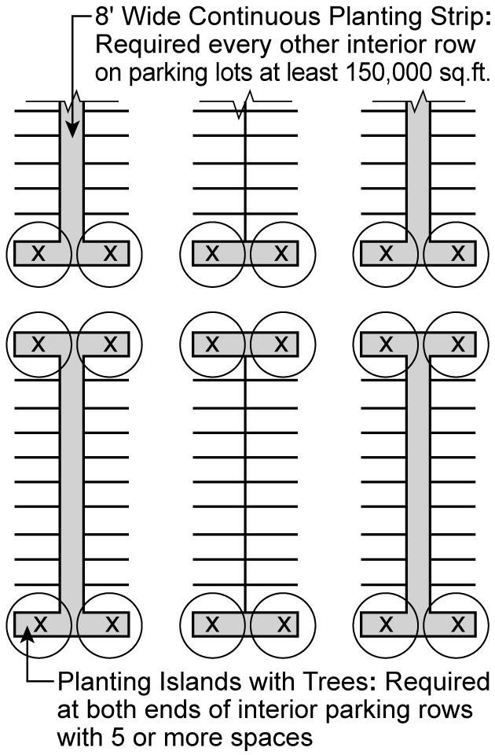
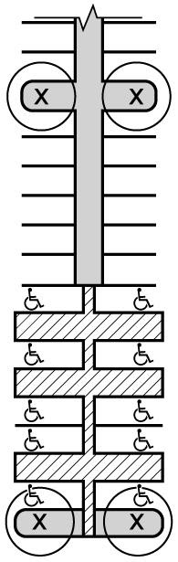

Article III, Chapter 7 — Special Urban Design Regulations
NYC Zoning Resolution — text through 2026-07-16
37-00 GENERAL PURPOSES
Last amended 2024-06-06
Special urban design regulations are set forth in this Chapter to improve the quality of the streetscape and to promote a lively and engaging pedestrian experience along commercial streets in various neighborhoods.
The provisions of this Chapter shall apply as follows:
(a) Section 37-10 sets forth applicability of Article II, Chapter 6 to zoning lots accessed by private roads and sets forth special regulations for lower density growth management areas in the Borough of Staten Island;
(b) Section 37-20, inclusive, sets forth special regulations for all energy infrastructure equipment and accessory mechanical equipment not located within a completely enclosed building;
(c) Section 37-30, inclusive, sets forth special urban design provisions for building frontages in certain areas that apply in conjunction with provisions specified in the supplemental use provisions of Article III, Chapter 2, special provisions for certain areas in Article VI, or in Special Purpose Districts in Articles VIII through XIV;
(d) Section 37-40, inclusive, sets forth provisions for relocating or renovating subway stairs in certain areas;
(e) Section 37-50, inclusive, sets forth requirements for pedestrian circulation spaces that apply in conjunction with provisions specified in certain Special Purpose Districts;
(f) Section 37-60, inclusive, sets forth provisions for publicly accessible open areas such as plazas, residential plazas and urban plazas created prior to October 17, 2007;
(g) Section 37-70, inclusive, sets forth provisions for public plazas;
(h) Section 37-80 sets forth provisions for arcades; and
(i) Section 37-90, inclusive, sets forth provisions for certain open parking areas, including landscaping.
Official NYC Planning source
37-10 SPECIAL REGULATIONS FOR PRIVATE ROADS AND LOWER DENSITY GROWTH MANAGEMENT AREAS
Last amended 2023-12-06
SPECIAL REGULATIONS FOR PRIVATE ROADS AND LOWER DENSITY GROWTH MANAGEMENT AREAS
Official NYC Planning source
37-11 Applicability of Article II, Chapter 6, to Lots with Private Roads
Last amended 2024-12-05
In C1 or C2 Districts mapped within R3, R4 or R5 Districts, and in C3 Districts, the provisions of Section 26-20 (SPECIAL REQUIREMENTS FOR LOTS WITH PRIVATE ROADS) shall apply to any zoning lot with buildings accessed by private roads, except where such zoning lot contains private roads constructed prior to February 6, 2002. However, for buildings containing commercial uses, the front yard and side yard requirements of Section 26-23 (Yards) and the front yard planting requirements of Section 26-22 (Requirements for Sidewalks, Street Trees and Planting) need not apply.
Additionally, in C3A Districts located within lower density growth management areas, the provisions of 26-30 (SPECIAL REQUIREMENTS FOR LOTS WITH PRIVATE ROADS IN LOWER DENSITY GROWTH MANAGEMENT AREAS) shall apply.
Official NYC Planning source
37-12 Special Screening for Lower Density Growth Management Areas in Staten Island
Last amended 2023-12-06
In all C1, C2 and C4-1 Districts in the Borough of Staten Island, all developments or enlargements containing non-residential uses shall be screened from adjoining zoning lots containing only residential uses by a planting strip at least five feet wide along the common side lot line, densely planted with evergreen shrubs at least four feet high at time of planting and of a variety expected to reach a height of six feet within three years. No chain link fences shall be permitted. However, no such screening shall be required where both such buildings front upon a street line that forms the boundary of a block front mapped entirely as a Commercial District.
Official NYC Planning source
37-20 SPECIAL SCREENING AND ENCLOSURE PROVISIONS
Last amended 2023-12-06
SPECIAL SCREENING AND ENCLOSURE PROVISIONS
Official NYC Planning source
37-21 Special at-grade Screening and Enclosure Regulations
Last amended 2024-12-05
In all districts, other than C8 Districts, all energy infrastructure equipment and accessory mechanical equipment shall be subject to the following provisions when not located on a building rooftop or within a completely enclosed building, whether or not such equipment is located within a required open space, yard, or court:
- all generators and cogeneration equipment utilizing fossil fuels which are accessory to buildings other than single- or two-family residences shall be completely enclosed within a building or other structure, except as necessary for mechanical ventilation;
- all other types of equipment, including generators and cogeneration equipment serving single- or two-family residences, may be unenclosed, provided that such equipment is located at least five feet from any side or rear lot line and where located between a street wall, or prolongation thereof, and the street line, such equipment is within three feet of a street wall; and
- where the area bounding all such equipment, as drawn by a rectangle from its outermost perimeter in plan view, exceeds 25 square feet, such equipment shall be screened in its entirety on all sides. Such screening may be opaque or perforated, provided that where perforated materials are provided, not more than 50 percent of the face is open.
- However, no screening shall be required for:
- equipment with a depth limited to 18 inches from an exterior wall;
- solar energy systems; and
- wind energy systems.
Official NYC Planning source
37-22 Special Rooftop Screening and Enclosure Regulations
Last amended 2024-12-05
In all districts, all energy infrastructure equipment and accessory mechanical equipment located on roofs, other than solar energy systems, shall be subject to the following provisions when not located within a completely enclosed building, whether or not such equipment is penetrating a maximum height limit or a sky exposure plane.
However, no screening shall be required for:
- equipment with a depth limited to 18 inches from an exterior wall;
- solar energy systems;
- wind energy systems; and
- accessory mechanical equipment installed on the rooftop of a building existing on December 5, 2024, where the height of the equipment does not exceed the height of the rooftop parapet, or a height of 6 feet as measured from the roof level.
All such equipment shall be screened on all sides. Such screening may be opaque or perforated, provided that where perforated materials are provided, not more than 50 percent of the face is open.
Official NYC Planning source
37-30 SPECIAL GROUND FLOOR LEVEL URBAN DESIGN PROVISIONS FOR CERTAIN AREAS
Last amended 2024-06-06
SPECIAL GROUND FLOOR LEVEL URBAN DESIGN PROVISIONS FOR CERTAIN AREAS
Official NYC Planning source
37-31 Applicability
Last amended 2024-06-06
The provisions of Section 37-30, inclusive, specify ground floor level requirements for building frontages in certain areas that are not otherwise governed by the provisions of Section 32-30 (STREETSCAPE REGULATIONS). Such provisions apply reference standards for certain streetscape elements that apply in conjunction with specific requirements in certain areas by underlying district regulations, special geographies, or in accordance with a Special Purpose District.
However, the ground floor depth requirements for certain uses and minimum transparency requirements of Sections 37-32 and 37-34, respectively, shall not apply to:
- zoning lots in Commercial Districts with a lot width of less than 20 feet, as measured along the street line, provided such zoning lots existed on March 22, 2016, and on the date of application for a building permit; or
- any community facility building used exclusively for either a school, or a house of worship, listed under Use Group III(B).
Official NYC Planning source
37-32 Ground Floor Depth Requirements for Certain Uses
Last amended 2024-06-06
The minimum depth for required ground floor non-residential uses, as applicable, shall be as set forth in this Section, except as set forth in Section 37-31 (Applicability).
Required ground floor level non-residential uses along a designated frontage shall extend to the minimum qualifying depth.
Official NYC Planning source
37-33 Maximum Width of Certain Uses
Last amended 2024-06-06
The maximum width of lobbies, entrances and exits to off-street parking facilities, and entryways to mass transit stations, are set forth in this Section.
- Ground floor lobbies
The maximum length of lobbies accessing uses not permitted on the ground floor level, shall be limited to a maximum street wall length, in total, of 25 percent of the street wall width of the building along the designated frontage, or 25 linear feet of street wall along such street frontage, whichever is less. The minimum width of such lobbies need not be less than 10 feet.
However, C4 through C7 Districts where the floor area ratio for commercial uses is greater than or equal to 10.0, the maximum lobby length shall be modified such that the maximum street wall length, in total, shall not exceed 25 percent of the street wall width of the building along the designated frontage, or 50 linear feet of street wall along such street frontage, whichever is less. The minimum width of such lobbies need not be less than 20 feet.
- Entrances and exits to parking facilities
Entrances and exits to off-street parking facilities, where permitted on the ground floor level, or portion thereof, shall be permitted subject to any applicable curb cut regulations of this Resolution.
- Entryways to mass transit stations
Entrances and exits to mass transit stations, as defined in Section 66-11, may be provided on the ground floor level of a building without restriction in street wall width.
Official NYC Planning source
37-34 Minimum Transparency Requirements
Last amended 2024-06-06
The ground floor level street wall along a primary frontage shall be glazed with transparent materials which may include show windows, transom windows or glazed portions of doors, except as set forth in Section 37-31 (Applicability).
Such transparent materials shall occupy at least 50 percent of the surface area of such ground floor level street wall between a height of two feet and 12 feet, or the height of the ground floor ceiling, whichever is higher, as measured from the adjoining sidewalk. Transparent materials provided to satisfy such 50 percent requirement shall not begin higher than 2 feet, 6 inches, above the level of the adjoining sidewalk, with the exception of transom windows, or portions of windows separated by mullions or other structural dividers, and shall have a minimum width of two feet. The maximum width of a portion of the ground floor level street wall without transparency shall not exceed 10 feet.
However, such transparency requirements shall not apply to portions of the ground floor level occupied by entrances or exits to accessory off-street parking facilities and public parking garages, where permitted, entryways to required loading berths, where permitted, entryways to subway stations, as applicable, or doors accessing emergency egress stairwells and passageways.
Official NYC Planning source
37-35 Parking Wrap and Screening Requirements
Last amended 2024-06-06
All accessory off-street parking spaces on the ground floor level of a building shall be wrapped by floor area in accordance with paragraph (a) or, where applicable, screened in accordance with applicable provisions of paragraph (b) of this Section.
- Along primary frontages
For ground floor levels, or portions thereof, fronting along a primary frontage, any portion of an accessory off-street parking facility that is located above curb level, except for permitted entrances and exits, shall be located behind permitted commercial, community facility or residential floor area so that no portion of such facility is visible from adjacent public sidewalks or publicly accessible areas. Such floor area shall extend to the minimum qualifying depth.
- Along secondary frontages
For ground floor levels, or portions thereof, fronting along a secondary frontage, off-street parking facilities, or portions thereof, may either be wrapped by floor area in accordance with paragraph (a) of this Section, or shall be subject to the following design requirements:
- any non-horizontal parking deck structures shall not be visible from the exterior of the building in elevation view;
- opaque materials shall be located on the exterior building wall between the bottom of the floor of each parking deck and no less than three feet above such deck; and
- a total of at least 50 percent of such exterior building wall, or portion thereof, with adjacent parking spaces shall consist of opaque materials which may include permitted signs, subject to the provisions of Section 32-60 (SIGN REGULATIONS), murals or other visual artwork, decorative screening or latticework, or living plant material.
Official NYC Planning source
37-36 Special Requirements for Blank Walls
Last amended 2021-05-12
Where visual mitigation elements are required on a blank wall along the ground floor level street wall in accordance with other streetscape provisions in this Resolution, such blank wall shall be covered by one or more of the following mitigation elements set forth in this Section.
Official NYC Planning source
37-40 OFF-STREET RELOCATION OR RENOVATION OF A SUBWAY STAIR
Last amended 2021-10-07
Where a development or an enlargement is constructed on a zoning lot of 5,000 square feet or more of lot area that fronts on a portion of a sidewalk containing a stairway entrance or entrances into a subway station located within the Special Midtown District as listed in Section 81-46, the Special Lower Manhattan District as listed in Section 91-43, the Special Downtown Brooklyn District as listed in Section 101-43, the Special Long Island City Mixed Use District as described in Section 117-44, the Special Union Square District as listed in Section 118-50, the Special East Harlem Corridors District as described in Section 138-33, and those stations listed in the following table, the existing entrance or entrances shall be relocated from the street onto the zoning lot. The new entrance or entrances* shall be provided in accordance with the provisions of this Section.
A relocated subway stair or a subway stair that has been renovated in accordance with the provisions of Section 37-50 (REQUIREMENTS FOR PEDESTRIAN CIRCULATION SPACE) may be counted as pedestrian circulation space pursuant to Section 37-50. In addition, for developments or enlargements on such zoning lots where a relocated or renovated subway stair has been provided in accordance with the provisions of this Section, the special use, bulk, parking, and streetscape modifications set forth in Sections 66-22 (Special Use Regulations) through 66-25 (Special Streetscape Regulations) may be applied.
|
STATION
|
LINE
|
|
The Bronx
|
|
161st Street**
|
Grand Concourse
|
|
|
|
Manhattan
|
|
8th Street
|
Broadway-60th Street
|
|
23rd Street
|
Broadway-60th Street
|
|
23rd Street
|
Lexington Avenue
|
|
28th Street
|
Lexington Avenue
|
|
33rd Street
|
Lexington Avenue
|
|
34th Street-Penn Station
|
8th Avenue
|
|
59th Street/Lexington Avenue-60th St.
|
Lexington Avenue and Broadway-60th Street
|
|
|
|
* Provision of a new subway entrance or entrances pursuant to the requirements of this Section may also require satisfaction of additional obligations under the Americans with Disabilities Act of 1990 (ADA), including the ADA Accessibility Guidelines. The New York City Transit Authority should be consulted with regard to any such obligations
** Access stairways to elevated portions of a station complex are exempt from this requirement
Official NYC Planning source
37-41 Standards for Location, Design and Hours of Public Accessibility
Last amended 2007-10-17
In addition to the standards set forth in the current station planning guidelines as issued by New York City Transit, the following standards shall also apply:
(a) Location
The relocated or renovated entrance shall be immediately adjacent to, and accessible without any obstruction from, a public sidewalk or pedestrian circulation space as defined in Section 37-50. Any such pedestrian circulation space shall have a minimum horizontal dimension equal to the width of the relocated stairs or the minimum width of the pedestrian circulation space, whichever is greater.
The relocated or renovated entrance may be provided within a building but shall not be enclosed by any doors. The area occupied by a relocated or renovated entrance within a building shall not be counted toward the floor area of the enlargement or development.
(b) Design standards
The relocated or renovated entrance shall have a stair width of at least eight feet for each run.
Where two or more existing stairway entrances are being relocated or renovated as part of the same development or enlargement, the new entrance or entrances shall have total stair widths equal to or greater than the sum of the stair widths of those existing stairway entrances, but in no case may any stair be less than eight feet in width.
The relocated entrance may be relocated within a public plaza, provided that the minimum width of each stair is 10 feet and the queuing area of the relocated entrance is unobstructed and contiguous to a sidewalk or a sidewalk widening. A relocated entrance within a public plaza is a permitted obstruction, but shall not be subject to the percentage limit on permitted obstructions for a public plaza.
For a relocated entrance only, the entrance shall have a queuing space at the top and bottom of the stairs that is at least eight feet wide and 15 feet long. Such queuing space may overlap with a public plaza or an arcade in accordance with the provisions of Sections 37-53 (Design Standards for Pedestrian Circulation Spaces) or 37-80 (ARCADES).
No stairway shall have more than 14 risers without a landing, and each landing shall have a minimum width equal to the width of the stairs, and a minimum length of five feet.
Throughout the entire stairway entrance, including passageways, the minimum clear, unobstructed height shall be at least 7 feet, 6 inches from finished floor to finished ceiling, including all lighting fixtures and signs.
The entire entrance area, including passageways, shall be free of obstructions of any kind, except for projecting information signage.
The relocated entrance shall connect to an existing or proposed subway passageway, or shall connect, via an underground passageway, to a mezzanine area of the subway station.
The below-grade portion of a relocated entrance may be constructed within the street.
(c) Hours of public accessibility
The relocated or renovated entrance shall be accessible to the public during the hours when the connected mezzanine area is open to the public or as otherwise approved by New York City Transit.
Official NYC Planning source
37-42 Administrative Procedure for a Subway Stair Relocation or Renovation
Last amended 2011-02-02
For any development or enlargement that is subject to the requirements for the relocation of a subway stair entrance or counts a renovated subway stair as pedestrian circulation space in accordance with the provisions of Section 37-50 (REQUIREMENTS FOR PEDESTRIAN CIRCULATION SPACE), inclusive, no plan shall be approved by the Department of Buildings and no excavation permit or building permit shall be issued, unless the following criteria are met:
(a) for a relocated entrance, such plan includes a stair relocation plan and related documents that require:
(1) construction of the new stair entrance in accordance with such plan;
(2) demolition of above-ground elements of the existing entrance;
(3) sealing of the existing entrance at the sidewalk level; and
(4) maintenance of the work performed on the relocated or renovated entrance; or
(b) for a renovated entrance, such plan includes a renovation plan and related documents that require:
(1) renovation of the entrance in accordance with such plan; and
(2) maintenance of the work performed on the renovated entrance; and
(c) such plan and related documents bear New York City Transit’s approval; and
(d) such plan is accompanied by a certified copy of an agreement, as recorded between New York City Transit and the owner for an easement on the zoning lot for subway-related use of the new stair entrance and for public access via such entrance to the subway station, which agreement has been recorded against the zoning lot in the Office of the Register of the City of New York and is accompanied by the Register's receipt of recordation; and
(e) no permanent certificate of occupancy shall be issued for the building either altered or developed, as set forth in Section 37-40, or enlarged, that is subject to the subway stair relocation requirement or is counting a renovated subway stair as pedestrian circulation space in accordance with the provisions of Section 37-50, inclusive, unless and until all of the work required under paragraph (a) or (b) of this Section has been completed and New York City Transit has so certified in writing to the Department of Buildings.
Official NYC Planning source
37-43 Modification of Requirements for a Relocated or Renovated Subway Stair
Last amended 2024-06-06
The Chairperson of the City Planning Commission may, by certification to the Commissioner of Buildings, allow modifications of the requirements of Sections 32-351 (Ground floor use in high-density areas) and 37-41 (Standards for Location, Design and Hours of Public Accessibility) or 37-70 (PUBLIC PLAZAS) if the relocated subway stair cannot be accommodated without modification to these provisions.
Official NYC Planning source
37-44 Waiver of Requirements
Last amended 2007-10-17
The provisions of Section 37-40 (OFF-STREET RELOCATION OR RENOVATION OF A SUBWAY STAIR) may be waived by joint certification of New York City Transit and the Chairperson of the City Planning Commission that major construction problems or operating design considerations render the stair relocation infeasible. In such event, the stair relocation requirement may be satisfied by retention of the existing stair and the provision on the zoning lot of an open area, qualifying under the provisions of Section 37-50 (REQUIREMENTS FOR PEDESTRIAN CIRCULATION SPACE), that accommodates pedestrian traffic passing the existing stair entrance.
Official NYC Planning source
37-50 REQUIREMENTS FOR PEDESTRIAN CIRCULATION SPACE
Last amended 2007-10-17
All pedestrian circulation space required pursuant to the provisions of any special purpose district shall comply with the provisions of this Section, as such may be modified by the terms of the special district.
Official NYC Planning source
37-51 Amount of Pedestrian Circulation Space
Last amended 2011-02-02
The minimum amount of pedestrian circulation space to be provided for developments or enlargements shall be determined by the following table:
MINIMUM PEDESTRIAN CIRCULATION SPACE REQUIREMENTS
Size of zoning lot |
Required area of pedestrian circulation space |
5,000 to 20,000 sq. ft. |
1 sq. ft. per 350 sq. ft. of new floor area |
Above 20,000 sq. ft. |
1 sq. ft. per 300 sq. ft. of new floor area |
Official NYC Planning source
37-52 Types of Pedestrian Circulation Space
Last amended 2021-10-07
The pedestrian circulation space provided shall be of one or more of the following types: an arcade, building entrance recess area, corner arcade, corner circulation space, relocation or renovation of a subway stair, sidewalk widening, transit volumes and improvements to mass transit stations, through block connection or public plaza. For the purposes of this Section, defined terms additionally include those in Section 66-11 (Definitions).
Each zoning lot shall be categorized as either a corner lot, through lot or interior lot, and pedestrian circulation space shall be provided on each zoning lot in at least one of the applicable types, or combinations of types, specified in the following table:
PROVISION OF PEDESTRIAN CIRCULATION SPACE ON CERTAIN TYPES OF LOTS
Type of Pedestrian Circulation Space |
Corner lot |
Through lot |
Interior lot |
Arcade |
x |
x |
x |
Building entrance recess area |
x |
x |
x |
Corner arcade |
x |
|
|
Corner circulation space |
x |
|
|
Relocation or renovation of subway stair |
x |
x |
x |
Sidewalk widening |
x |
x |
x |
Transit volumes and improvements to mass transit stations |
x |
x |
x |
Through block connection |
x |
x |
|
Public plaza |
x |
x |
x |
Minimum design standards for each type of pedestrian circulation space and, where applicable, the maximum amount of each type of pedestrian circulation space that may be counted toward meeting the requirements of Section 37-51 (Amount of Pedestrian Circulation Space) are set forth in Section 37-53 (Design Standards for Pedestrian Circulation Spaces).
Official NYC Planning source
37-53 Design Standards for Pedestrian Circulation Spaces
Last amended 2023-12-06
(a) Arcade
Arcades shall not be subject to the provisions of Sections 12-10 (DEFINITIONS) and 37-80 (ARCADES). In lieu thereof, the provisions of this Section shall apply.
An arcade is a continuous covered space that adjoins and extends along a front lot line, is at the same elevation as the adjoining sidewalk, is open for its entire length to the sidewalk except for columns and is accessible to the public at all times. An arcade shall be provided on the wide street frontage of a zoning lot of a development or enlargement where the zoning lot lies directly adjacent to an existing arcade on a wide street, except where an existing building without an arcade extends along a portion of the wide street front lot line of the zoning lot containing the development or enlargement. Where an arcade abuts another arcade, there shall be a clear, unobstructed passage between both arcades.
An arcade shall meet the following requirements:
(1) Dimensions
An arcade with columns shall have a minimum clear width of 10 feet, exclusive of all columns, and a maximum width of 15 feet, inclusive of columns. No column width shall be greater than five feet. Columns shall be spaced along the street with a minimum clear width between columns of 15 feet. An arcade shall have a clear height of not less than 12 feet and not more than 30 feet.
(i) On an interior lot or a through lot fronting on a narrow street, an arcade without columns is permitted only if:
(a) it has a continuous, unobstructed minimum length of 100 feet or, with the exception of the width of driveways for the required loading berths located at the side lot line of the zoning lot, is unobstructed for the full length of the frontage of the development, whichever is greater; and
(b) the entire front lot line shall be unobstructed for the same depth of the arcade, except for that portion of the front lot line occupied by an existing building.
(ii) On an interior lot or a through lot fronting on a narrow street, an arcade with columns is permitted only if it connects directly to an existing arcade on an adjacent zoning lot, matching it in width and alignment, and has a continuous, unobstructed minimum length beyond the existing adjacent arcade of at least 100 feet or, with the exception of the width of driveways for the required loading berths located at the side lot line of the zoning lot, is unobstructed for the full length of the frontage of the development, whichever is greater.
(iii) On a corner lot fronting on a narrow street, an arcade is permitted only if it extends for the full length of the street frontage, with the exception of a driveway for a required loading berth located at the side lot line of the zoning lot, or if the arcade provides unobstructed pedestrian flow along such entire frontage in combination with one or more of the following other spaces with which it connects at one or both ends: a corner arcade, a publicly accessible open area, an off-street rail mass transit access improvement, an intersecting sidewalk widening, an intersecting street, a relocated or renovated subway entrance, a through block connection or a through block galleria.
(iv) On a wide street, an arcade shall be permitted, provided that:
(a) the arcade extends along the full length of the street line between intersecting streets; or
(b) in the case of an arcade that occupies less than the entire street frontage between intersecting streets, on a full block front zoning lot, unobstructed pedestrian flow along the entire frontage is provided on the zoning lot by the arcade in combination with one or more of the following open spaces with which the arcade connects at one or both ends: a corner circulation space, a publicly accessible open area or an intersecting sidewalk widening; or
(c) in the case of an arcade whose zoning lot occupies less than the entire street frontage between intersecting streets, the arcade connects with an existing arcade of matching width and alignment, a publicly accessible open area on an adjacent zoning lot, so that unobstructed pedestrian flow along the entire block front is provided by the arcade in combination with such existing spaces.
(2) Full block front arcade
When a zoning lot occupies a full block front, both ends of the arcade on that street frontage shall be open and accessible directly from the sidewalk of the intersecting street or any other qualifying pedestrian circulation space.
(3) Permitted obstructions
Except for building columns, and qualifying exterior wall thickness pursuant to Section 33-23 (Permitted Obstructions in Required Yards or Rear Yard Equivalents), an arcade shall be free from obstructions of any kind.
(4) Specific prohibitions
No vehicular driveways, except as permitted under paragraph (a)(1) (Dimensions) of this Section, parking spaces, passenger drop-offs, loading berths or trash storage facilities are permitted within an arcade, nor shall such facilities be permitted immediately adjacent to an arcade.
(5) Illumination
All existing and new arcades shall maintain a minimum level of illumination of not less than five horizontal foot candles between sunset and sunrise.
(b) Building entrance recess area
A building entrance recess area is a space that adjoins and is open to a sidewalk or sidewalk widening for its entire length and provides unobstructed access to the building's lobby entrance or to the entrance to a ground floor use.
A building entrance recess area shall meet the following requirements:
(1) Dimensions
A building entrance recess area shall have a minimum length of 15 feet and a maximum length of 50 feet measured parallel to the street line at a building’s lobby entrance and a maximum length of 30 feet parallel to the street line at a ground floor use entrance. It shall have a maximum depth of 15 feet measured from the street line and shall have a minimum depth of 10 feet measured from the street line.
(2) Permitted obstructions
Any portion of a building entrance recess area under an overhanging portion of the building shall have a minimum clear height of 15 feet. It shall be free of obstructions except for qualifying exterior wall thickness pursuant to Section 33-23, and building columns, between any two of which there shall be a clear space of at least 15 feet measured parallel to the street line. Between a building column and a wall of the building, there shall be a clear path at least five feet in width.
(3) Permitted overlap
A building entrance recess area may overlap with an arcade, a corner arcade, a corner circulation space or a sidewalk widening, and may adjoin or overlap and connect directly without obstruction to another building entrance recess area except that, on any one street frontage, each lobby or ground floor use shall connect to only one building entrance recess area.
(c) Corner arcade
A corner arcade shall not be subject to the provisions of Sections 12-10 (DEFINITIONS) and 37-80 (ARCADES). In lieu thereof, a corner arcade shall be a small covered space adjoining the intersection of two streets at the same elevation as the adjoining sidewalk or sidewalk widening and directly accessible to the public at all times.
A corner arcade shall meet the following requirements:
(1) Dimensions
(i) a corner arcade shall have a minimum area of 200 square feet, a minimum depth of 15 feet measured along a line bisecting the angle of intersecting street lines, and shall extend along both street lines for at least 15 feet but not more than 40 feet from the intersection of the two street lines; and
(ii) the height of a corner arcade shall be not less than 12 feet and a clear path at least 12 feet wide shall be provided from one street line to another street line.
(2) Permitted obstructions
Except for building columns, and qualifying exterior wall thickness pursuant to Section 33-23, a corner arcade shall be free from obstructions of any kind.
(3) Specific prohibitions
The specific prohibitions pertaining to an arcade as described in paragraph (a)(4) of this Section shall also be applicable to a corner arcade.
(4) Permitted overlap
A corner arcade may overlap with an arcade; however, the area of overlap may only be counted once toward the fulfillment of the required minimum area of pedestrian circulation space.
(d) Corner circulation space
A corner circulation space is a small open space on a zoning lot, adjoining the intersection of two streets, at the same elevation as the adjoining sidewalk or sidewalk widening and directly accessible to the public at all times.
A corner circulation space shall meet the following requirements:
(1) Dimensions
A corner circulation space shall have the same minimum dimensions as a corner arcade, as described in paragraph (c)(1) of this Section.
(2) Permitted obstructions
A corner circulation space shall be completely open to the sky from its lowest level, except for temporary elements of weather protection, such as awnings or canopies, provided that the total area of such elements does not exceed 20 percent of the area of the corner circulation space and that such elements and any attachments thereto are at least eight feet above curb level. A corner circulation space shall be clear of all other obstructions including, without limitation, door swings, building columns, street trees, planters, vehicle storage, parking or trash storage. However, qualifying exterior wall thickness may be added pursuant to Section 33-23. No gratings, except for drainage, shall be permitted.
(3) Building entrances
Entrances to ground level uses are permitted from a corner circulation space.
An entrance to a building lobby is permitted from a corner circulation space, provided that the entrance is at no point within 20 feet of the intersection of the two street lines that bound the corner circulation space.
(4) Permitted overlap
A corner circulation space may overlap with a sidewalk widening.
(e) Relocation or renovation of a subway stair
When a development or enlargement is constructed on a zoning lot containing a relocated stairway entrance or entrances to a subway, or an existing stairway entrance or entrances to a subway, and such entrance or entrances are relocated or renovated in accordance with the provisions of Section 37-40 (OFF-STREET RELOCATION OR RENOVATION OF A SUBWAY STAIR), inclusive, one and one-half times the area, measured at street level, of such entrance or entrances may count toward meeting the pedestrian circulation space requirement.
(f) Sidewalk widening
A sidewalk widening is a continuous, paved, open area along the front lot line of a zoning lot at the same elevation as the adjoining sidewalk and directly accessible to the public at all times. A sidewalk widening shall be provided on the wide street frontage of a zoning lot of a development or enlargement where all existing buildings on the same block frontage, whether on the same or another zoning lot, provide sidewalk widenings.
A sidewalk widening shall meet the following requirements:
(1) Dimensions
A sidewalk widening shall have a width of no less than five feet nor more than 10 feet measured perpendicular to the street line, and shall be contiguous along its entire length to a sidewalk.
A sidewalk widening shall extend along the full length of the front lot line except for the portion of the front lot line interrupted by an existing building which is located at a side lot line or, in the case of a full block frontage, located at the intersection of two streets.
A required sidewalk widening on a wide street shall connect directly to any existing adjoining sidewalk widening and shall extend the entire length of the front lot line.
The width of such a required sidewalk widening shall equal that of the existing adjoining sidewalk widening. If there is more than one such existing sidewalk widening, the width of such a required sidewalk widening shall equal that of the existing sidewalk widening that is longest.
A sidewalk widening is permitted on a wide street when not adjacent to an existing sidewalk widening only if either the sidewalk widening extends along the street line of the wide street for the full length of the block front, or the zoning lot is a corner lot and the sidewalk widening extends along the full length of the street line of the wide street to its intersection with the street line of the other street on which the zoning lot fronts.
Except for the permitted interruptions, as set forth in paragraph (f)(2) of this Section, a sidewalk widening is permitted on a narrow street only if it has a length of at least 100 feet.
(2) Permitted interruptions
Interruptions of the continuity of a qualifying sidewalk widening shall be permitted only under the following conditions:
(i) by an arcade that has a width equal to or greater than the width of the sidewalk widening and which is directly connected to the sidewalk widening;
(ii) if overlapped by a corner circulation space or a building entrance recess area that permits uninterrupted pedestrian flow;
(iii) if overlapped by a public plaza, provided that the overlapping portion of such public plaza conforms to the design standard of a sidewalk widening;
(iv) by an off-street subway entrance, provided such an entrance is located at a side lot line or is located at the intersection of two street lines;
(v) if overlapped by the queuing space of a relocated or renovated subway entrance, provided that the queuing space for the entrance leaves at least a five foot uninterrupted width of sidewalk widening along the entire length of the queuing space; or
(vi) by a driveway that is located at a side lot line; however, where the zoning lot has a through block connection, a through block galleria or a through block public plaza at such a side lot line, the location of its driveway is not restricted. The area occupied by the driveway, up to the width of the sidewalk widening, may be counted toward meeting the pedestrian circulation space requirement, provided that there shall be no change of grade within the area of the sidewalk widening.
(3) Permitted obstructions
A sidewalk widening shall be unobstructed from its lowest level to the sky except for those obstructions permitted under paragraph (f)(2) of this Section, for qualifying exterior wall thickness pursuant to Section 33-23, and for temporary elements of weather protection, such as awnings or canopies, provided that the total area of such elements, measured on the plan, does not exceed 20 percent of the sidewalk widening area, and that such elements and any attachments thereto are at least eight feet above curb level.
(4) Specific prohibitions
No street trees are permitted on a sidewalk widening. No vehicle storage, parking or storage of trash is permitted on a sidewalk widening. Gratings may not occupy more than 50 percent of the sidewalk widening area nor be wider than one half the width of the sidewalk widening.
(5) Special design treatment
When one end of the sidewalk widening abuts an existing building on the zoning lot or an existing building on the side lot line of the adjacent zoning lot, design treatment of the termination of the sidewalk widening is required to smooth pedestrian flow. The portion of the sidewalk widening subject to design treatment, hereinafter called the transition area, shall not extend more than 10 feet nor less than five feet along the sidewalk widening from its termination.
The transition area shall receive special design treatment which may include, but is not limited to, landscaping, sculpture or building transparency. The transition area shall be designed to effect a gradual change of the sidewalk widening width to match the street wall line of the existing building at the sidewalk widening’s termination. This may be accomplished by a curved or diagonal edge of paving along a landscaped bed, the use of stepped edges of the building or other architectural treatment of the building or paving which avoids an abrupt visual termination of the sidewalk widening. Such special design treatment may be considered a permitted obstruction.
(g) Transit volumes and improvements to mass transit stations
Where transit volumes or improvements to mass transit stations are provided pursuant to the provisions of Article VI, Chapter 6 (Special Regulations Applying Around Mass Transit Stations), each square foot of mass transit access may constitute one square foot of required pedestrian circulation space, not to exceed 3,000 square feet. For the purposes of this paragraph, defined terms include those in Section 66-11 (Definitions).
(h) Through block connection
A through block connection is a paved, open or enclosed space providing unobstructed access to the building's main lobby and connecting, in a straight, continuous, unobstructed path, two parallel or nearly parallel streets.
Up to a maximum of 3,000 square feet of a through block connection may count toward the minimum pedestrian circulation space requirement.
A through block connection shall meet the following requirements:
(1) Location
(i) A through block connection shall be located at least 150 feet from the intersection of two streets.
(ii) Where the zoning lot or a portion thereof is directly across a street from, and opposite to, an existing through block connection on an adjacent block and the existing connection is at least 150 feet from the intersection of two streets, the alignment of the new through block connection shall overlap with that of the existing connection. Such existing connection may also be a through block galleria, through block public plaza or any through block circulation area with a minimum width of 12 feet, which is located within a building.
(iii) Where there are already two through block connections located on the same block, a new through block connection shall not count toward meeting the pedestrian circulation space requirement.
(iv) No through block connection shall be permitted on any portion of a zoning lot occupied by a landmark or interior landmark so designated by the Landmarks Preservation Commission, or occupied by a building whose designation as a landmark or interior landmark has been calendared for public hearing and is pending before the Landmarks Preservation Commission.
(2) Design standards for a through block connection
(i) A through block connection shall provide a straight, continuous, unobstructed path at least 15 feet wide. If covered, the clear, unobstructed height of a through block connection shall not be less than 15 feet. Qualifying exterior wall thickness, as set forth in Section 33-23, shall be a permitted obstruction to such path.
(ii) At no point shall the level of a through block connection be more than five feet above or below curb level. In all cases, the through block connection must provide a clear path, accessible to people with disabilities, through its entire length.
(iii) A through block connection may be located inside or outside of a building. The area of a through block connection located within a building shall be counted as floor area.
(iv) A through block connection located partially or wholly within a building shall adjoin and connect directly to the building's main lobby via unobstructed openings with an aggregate width exceeding that of any other entrances to the lobby.
(v) A through block connection located wholly or partially outside a building shall provide unobstructed access directly to the building's main lobby through the major entrance. For the purposes of this Section, the major entrance shall be that entrance to the main lobby which has the greatest aggregate width of clear openings for access.
(vi) Any portion of a through block connection located outside a building shall be illuminated throughout with a minimum level of illumination of not less than five horizontal foot candles (lumens per candle). Such illumination shall be maintained throughout the hours of darkness.
(vii) A through block connection shall at a minimum be accessible to the public from 8:00 a.m. to 7:00 p.m. on the days the building is open for business and shall have posted, in prominent, visible locations at its entrances, signs meeting the standards set forth in paragraph (h)(2)(viii) of this Section.
(viii) A through block connection shall provide the following information for public access at each public entry to the through block connection:
(a) For an unenclosed through block connection, the public access information shall be an entry plaque located at the entrance to the through block connection at each street frontage. The entry plaque shall contain:
(1) a public space symbol and required text that matches the dimensions and graphic standards provided in the Privately Owned Public Space Signage file from the Required Signage Symbols page on the Department of City Planning website. Such symbol and required text shall include the phrase “Open To Public” and shall be provided with a highly contrasting background, in a format that ensures legibility. Additional requirements and review procedures for privately owned public space signage systems are specified in Title 62, Chapter 11, of the Rules of the City of New York; and
(2) an international Symbol of Access for people with disabilities that is at least three inches square.
The entry plaque shall be mounted with its center five feet above the elevation of the nearest walkable pavement on a wall or a permanent freestanding post. It shall be placed so that the entire entry plaque is obvious and directly visible without any obstruction, along every line of sight from all paths of pedestrian access to the through block connection, in a position that clearly identifies the entry to the connection.
(b) For an enclosed through block connection or a portion thereof:
(1) a public space symbol and required text as described in paragraph (h)(2)(viii)(a) of this Section, shall be mounted with its center five feet above the elevation of the nearest walkable pavement;
(2) lettering stating "PUBLIC ACCESS TO ____ STREET," indicating the opposite street to which the through block connection passes and which lettering shall not be less than three inches in height and located not more than three inches away from the public space symbol and required text; and
(3) lettering not more than two inches or less than one and a half inches in height stating "Open" with the hours and days of operation of the through block connection. This lettering shall be located not more than three inches from the public space symbol and required text.
The above required information shall be permanently affixed on the glass panel of the entry doors of the through block connection clearly facing the direction of pedestrian flow. The information shall be located not higher than six feet or lower than three feet above the level of the pedestrian path at the entry.
(i) Public plaza
A maximum of 30 percent of the area of a public plaza that faces a street intersection, or provides access to a major building entrance, may be counted toward meeting the pedestrian circulation space requirement.
A maximum of 3,000 square feet of a through block public plaza may be counted toward meeting the pedestrian circulation space requirement.
For all other public plazas, the first 10 feet of depth from the street line may be counted toward meeting the pedestrian circulation space requirement, provided that the public plaza conforms to the design standards of a sidewalk widening as set forth in paragraph (f) of this Section.
All public plazas shall comply with Section 37-70 (PUBLIC PLAZAS), inclusive.
Any area of permitted overlap between pedestrian circulation spaces or other amenities shall be counted only once toward meeting the required amount of pedestrian circulation space. Unobstructed access shall be provided between overlapping spaces.
Official NYC Planning source
37-54 Modification of Design Standards of Pedestrian Circulation Spaces Within Existing Buildings
Last amended 2007-10-17
The City Planning Commission may authorize a modification of any required minimum amount of pedestrian circulation space to be provided on wide street frontages and design standards, as indicated, for the following required pedestrian circulation spaces, to be provided within or under an existing building to remain on a zoning lot:
(a) Arcade: minimum width, minimum height, obstructions, minimum clear width between obstructions, minimum length, column sizes
(b) Building entrance recess area: minimum length, minimum depth from street line, minimum height, obstructions, clear space between obstructions and clear space between obstructions and building wall
(c) Corner arcade or corner circulation space: minimum depth, minimum width of clear path, minimum height, obstructions
(d) Through block connection: minimum width of unobstructed path, minimum height, through block level.
The Commission may authorize a modification of design standards for pedestrian circulation spaces when the following findings are met:
(1) a modification is needed because of the inherent constraints of the existing building;
(2) the modification is limited to the minimum needed because of the inherent constraints of the existing building; and
(3) the pedestrian circulation space as modified shall be equal in area, and substantially equivalent, to the required space in terms of quality, effectiveness and suitability for public use.
Official NYC Planning source
37-60 PUBLICLY ACCESSIBLE OPEN AREAS EXISTING PRIOR TO OCTOBER 17, 2007
Last amended 2007-10-17
PUBLICLY ACCESSIBLE OPEN AREAS EXISTING PRIOR TO OCTOBER 17, 2007
Official NYC Planning source
37-61 Design Standards
Last amended 2019-12-19
Design standards for plazas, residential plazas and urban plazas developed prior to October 17, 2007, are located in APPENDIX E of this Resolution.
Notwithstanding the foregoing, the applicable provisions of APPENDIX E shall be superseded as follows:
(a) all plazas, residential plazas and urban plazas shall provide an information plaque that contains a public space symbol and required text that matches the dimensions and graphic standards provided in the Privately Owned Public Space Signage file from the Required Signage Symbols page on the Department of City Planning website. Such symbol and required text shall include the phrase “Open To Public” and shall be provided with a highly contrasting background, in a format that ensures legibility. Additional requirements and review procedures for privately owned public space signage systems are specified in Title 62, Chapter 11, of the Rules of the City of New York;
(b) the introduction of moveable tables and chairs pursuant to Section 37-626 (Moveable tables and chairs) shall be permitted within plazas, and shall not constitute a design change pursuant to Section 37-625 (Design changes).
Official NYC Planning source
37-62 Changes to Existing Publicly Accessible Open Areas
Last amended 2007-10-17
Changes to Existing Publicly Accessible Open Areas
Official NYC Planning source
37-70 PUBLIC PLAZAS
Last amended 2007-10-17
Public plazas are open areas on a zoning lot intended for public use and enjoyment. The standards contained within Sections 37-70 through 37-78, inclusive, are intended to serve the following specific purposes:
(a) to serve a variety of users of the public plaza area;
(b) to provide spaces for solitary users while at the same time providing opportunities for social interaction for small groups; and
(c) to provide safe spaces, with maximum visibility from the street and adjacent buildings and with multiple avenues for ingress and egress.
All public plazas shall comply with the provisions of Section 37-70 through 37-78, inclusive. These provisions may be modified pursuant to Section 74-91 (Modification of Public Plazas).
Official NYC Planning source
37-73 Kiosks and Open Air Cafes
Last amended 2016-06-21
Kiosks and open air cafes may be placed within a publicly accessible open area upon certification, pursuant to this Section. Such features shall be treated as permitted obstructions. Only uses permitted by the applicable district regulations may occupy publicly accessible open areas or front on publicly accessible open areas.
(a) Kiosks
Where a kiosk is provided, it shall be a one-story temporary or permanent structure that is substantially open and transparent as approved by the Department of Buildings in conformance with the Building Code. Kiosks, including roofed areas, shall not occupy an area in excess of 100 square feet per kiosk. One kiosk is permitted for every 5,000 square feet of publicly accessible open area, exclusive of areas occupied by other approved kiosks or open air cafes. Kiosk placement shall not impede or be located within any pedestrian circulation path. Any area occupied by a kiosk shall be excluded from the calculation of floor area. Kiosks may be occupied only by uses permitted by the applicable district regulations such as news, book or magazine stands, food or drink service, flower stands, information booths, or other activities that promote the public use and enjoyment of the publicly accessible open area. Any kitchen equipment shall be stored entirely within the kiosk.
Kiosks must be in operation and provide service a minimum of 225 days per year. However, kiosks may operate for fewer days in accordance with conditions set forth in paragraph (c) of this Section.
Notwithstanding the provisions of Section 32-41 (Enclosure Within Buildings), outdoor eating services or uses occupying kiosks may serve customers in a publicly accessible open area through open windows.
(b) Open air cafes
Where an open air cafe is provided, it shall be a permanently unenclosed restaurant or eating or drinking place, permitted by applicable district regulations, which may have waiter or table service, and shall be open to the sky except that it may have umbrellas, temporary fabric roofs with no vertical supports in conformance with the Building Code, and removable heating lamps. Open air cafes shall occupy an aggregate area not more than 20 percent of the total area of the publicly accessible open area. Publicly accessible open areas less than 10 feet in width that are located between separate sections of the same open air cafe or between sections of an open air cafe and a kiosk that provides service for such cafe must be included in the calculation of the maximum aggregate area of the open air cafe. Open air cafes shall be located along the edge of the publicly accessible open area, except for open air cafes located within publicly accessible open areas greater than 30,000 square feet in area. Open air cafes may not occupy more than one third of any street frontage of the publicly accessible open area and may not contain any required circulation paths. An open air cafe must be accessible from all sides where there is a boundary with the remainder of the publicly accessible open area, except where there are planters or walls approved pursuant to a prior certification for an open air cafe. Subject to the foregoing exception, fences, planters, walls, fabric dividers or other barriers that separate open air cafe areas from the publicly accessible open area or sidewalk are prohibited. All furnishings of an open air cafe, including tables, chairs, bussing stations, and heating lamps, shall be completely removed from the publicly accessible open area when the open air cafe is not in active use, except that tables and chairs may remain in the publicly accessible open area if they are unsecured and may be used by the public without restriction. No kitchen equipment shall be installed within an open air cafe; kitchen equipment, however, may be contained in a kiosk adjoining an open air cafe. An open air cafe qualifying as a permitted obstruction shall be excluded from the definition of floor area.
The exterior corners of the border of the space to be occupied by an open air cafe shall be marked on the ground by a line painted with white latex traffic or zone marking paint. The line shall be one inch wide and three inches in length on each side of the cafe border from the point where the borders intersect at an angled corner. In addition, a line one inch wide and three inches long shall be marked on the ground at intervals of no more than five feet starting from the end point of the line marking the cafe corners.
Open air cafes must be in operation and provide service a minimum of 225 days per year.
Open air cafes shall be located at the same elevation as an adjoining public plaza and sidewalk area, except for platforms that shall not exceed six inches in height.
(c) Certification
Kiosks and open air cafes may be placed within the area of a publicly accessible open area upon certification by the Chairperson of the City Planning Commission to the Commissioner of Buildings, that:
(1) such use promotes public use and enjoyment of the publicly accessible open area;
(2) such use complements desirable uses in the surrounding area;
(3) the owner of such use or the building owner shall be responsible for the maintenance of such kiosk or open air cafe, which shall be located within areas designated on building plans as available for occupancy by such uses and no encroachment by a kiosk or open air cafe outside an area so designated shall be permitted;
(4) such use does not adversely impact visual and physical access to and throughout the publicly accessible open area;
(5) such use, when located within a public plaza, is provided in accordance with all the requirements set forth in this Section;
(6) for kiosks and open air cafes located within an existing publicly accessible open area, such use is proposed as part of a general improvement of the publicly accessible open area where necessary, including as much landscaping and public seating as is feasible, in accordance with the standards for public plazas;
(7) a sign shall be provided in public view within the cafe area indicating the days and hours of operation of such cafe; and
(8) for kiosks that are in operation less than 225 days per year, an off-season plan has been submitted to the Chairperson showing that such kiosks will be completely removed from the publicly accessible open area when not in operation, that the area previously occupied by the kiosk is returned to public use and such area is in compliance with the applicable publicly accessible open area design standards.
(d) Process
An application for certification shall be filed with the Chairperson of the City Planning Commission, and the Chairperson shall furnish a copy of the application for such certification to the affected Community Board at the earliest possible stage. The Chairperson will give due consideration to the Community Board’s opinion as to the appropriateness of such a facility in the area and shall respond to such application for certification within 60 days of the application's receipt.
The Chairperson shall file any such certification with the City Council. The Council, within 20 days of such filing, may resolve by majority vote to review such certification. If the Council so resolves, within 50 days of the filing of the Chairperson's certification, the Council shall hold a public hearing and may approve or disapprove such certification. If, within the time periods provided for in this Section, the Council fails to act on the Chairperson's certification, the Council shall be deemed to have approved such certification.
Such certification shall be effective for a period of three years.
All applications for the placement of kiosks or open air cafes shall include a detailed site plan or plans indicating compliance with the provisions of this Section, including the layout and number of tables, chairs, restaurant equipment and heating lamps, as well as the storage location for periods when the kiosk or open air cafe is closed. Where a kiosk or open air cafe is to be located within an existing publicly accessible open area, each kiosk or open air cafe application must be accompanied by a compliance report in accordance with the requirements of Section 37-78, paragraph (c).
Where design changes to publicly accessible open areas are necessary in order to accommodate such kiosk or open air cafe, or to comply with paragraph (c)(6) of this Section, a certification pursuant to Section 37-625 (Design changes) shall be required, except that within the Special Lower Manhattan District, design changes to a publicly accessible open area pursuant to the provisions of Section 91-832 (Plaza improvements) as part of a certification pursuant to Section 91-83 (Retail Uses Within Existing Arcades), an authorization pursuant to Section 91-841 (Authorization for retail uses within existing arcades) or a certification pursuant to Section 91-837 (Subsequent design changes) may satisfy the requirements in paragraph (c)(6) of this Section.
All such plans for kiosks or open air cafes, once certified, shall be filed and duly recorded in the Borough Office of the City Register of the City of New York, indexed against the property in the form of a legal instrument providing notice of the certification for the kiosk or open air cafe, pursuant to this Section. The form and contents of the legal instrument shall be satisfactory to the Chairperson, and the filing and recording of such instrument shall be a precondition for the placement of the kiosk or open air cafe within the publicly accessible open area.
Official NYC Planning source
37-74 Amenities
Last amended 2007-10-17
All public plazas shall provide amenities, as listed in Sections 37-741 through 37-748, inclusive. All required amenities shall be considered permitted obstructions within the public plaza.
Official NYC Planning source
37-76 Mandatory Allocation of Frontages for Permitted Uses
Last amended 2024-06-06
- Ground floor level uses
The frontage of all new building walls fronting on a public plaza, or fronting on an arcade adjoining a public plaza, exclusive of such frontage occupied by building lobbies and frontage used for subway access, shall be subject to the following use provisions:
- The underlying use regulations shall be modified as follows:
- dwelling units shall not be permitted;
- uses listed under Use Group III(A) shall not be permitted;
- uses listed under Use Group IV shall be limited to those listed under Public Service Buildings, and Renewable Energy and Green Infrastructure;
- guest rooms or suites associated with Transient Accommodations listed under Use Group V shall not be permitted; and
- uses listed under Use Group VII shall be limited in size to 5,000 square feet per establishment;
- All uses occupying such frontage shall:
- be directly accessible from the major portion of the public plaza, an adjoining arcade, or a street frontage shared by the establishment and the public plaza;
- have a minimum depth of 15 feet, measured perpendicular to the wall adjoining the public plaza; and
- occupy such frontage for the life of the increased floor area of the bonused development.
The remaining frontage may be occupied by other uses, lobby entrances or vertical circulation elements, in accordance with the district regulations.
As an alternative, where retail or service establishments located in an existing building front upon a public plaza or an arcade adjoining a public plaza, at least 50 percent of the total frontage of all building walls fronting on the public plaza, or fronting on an arcade adjoining a public plaza, exclusive of such frontage occupied by building lobbies and frontage used for subway access, shall be allocated for occupancy at the ground floor level by uses permitted in accordance with paragraph (a)(1) subject to the provisions of paragraph (a)(2) of this Section, as permitted by the applicable district regulations.
- Public entrances
A public entrance to the principal use of the building associated with the public plaza shall be located within 10 feet of the major portion of the public plaza. Frontage on the public plaza that is occupied by a building entrance or lobby shall not exceed 60 feet or 40 percent of the total aggregate frontage of the new building walls on the major and minor portions of the public plaza, whichever is less, but in no case shall building entrances or lobbies occupy less than 20 feet of frontage on the public plaza.
- Transparency
All new building walls fronting on the major and minor portions of the public plaza shall be treated with clear, untinted transparent material for 50 percent of the surface area below 14 feet above the public plaza level, or the ceiling level of the ground floor of the building, whichever is lower. Any non-transparent area of a new or existing building wall fronting on the major or minor portion of a public plaza shall be treated with a decorative element or material or shall be screened with planting to a minimum height of 15 feet above the public plaza.
Official NYC Planning source
37-77 Maintenance
Last amended 2009-06-10
The building owner shall be responsible for the maintenance of the public plaza including, but not limited to, the location of permitted obstructions pursuant to Section 37-726, litter control, management of pigeons and rodents, maintenance of required lighting levels, and the care and replacement of furnishings and vegetation within the zoning lot.
Official NYC Planning source
37-78 Compliance
Last amended 2011-02-02
(a) Building permits
No foundation permit shall be issued by the Department of Buildings for any development or enlargement that includes a public plaza, nor shall any permit be issued by the Department of Buildings for any change to a plaza, residential plaza or urban plaza without certification by the Chairperson of the City Planning Commission of compliance with the provisions of Sections 37-625 or 37-70, as applicable.
An application for such certification shall be filed with the Chairperson showing the plan of the zoning lot; a site plan indicating the area and dimensions of the proposed public plaza and the location of the proposed development or enlargement and all existing buildings temporarily or permanently occupying the zoning lot; computations of proposed floor area, including bonus floor area; and a detailed plan or plans prepared by a registered landscape architect, including but not limited to a furnishing plan, a planting plan, a signage plan, a lighting/photometric plan and sections and elevations, as necessary to demonstrate compliance with the provisions of Sections 37-625 or 37-70, as applicable.
All plans for public plazas or other publicly accessible open areas that are the subject of a certification pursuant to Section 37-625 shall be filed and duly recorded in the Borough Office of the City Register of the City of New York, indexed against the property in the form of a legal instrument, in a form satisfactory to the Chairperson, providing notice of the certification of the public plaza, pursuant to this Section. Such filing and recording of such instrument shall be a precondition to certification. The recording information shall be included on the certificate of occupancy for any building, or portion thereof, on the zoning lot issued after the recording date. No temporary or final certificate of occupancy shall be issued for any bonus floor area generated by a public plaza unless and until the public plaza has been substantially completed in accordance with the approved plans, as verified by the Department of City Planning and certified to the Department of Buildings.
Notwithstanding any of the provisions of Section 11-33 (Building Permits for Minor or Major Development or Other Construction Issued Before Effective Date of Amendment), any residential plaza or urban plaza for which a certification was granted pursuant to Article II, Chapter 3, or Article III, Chapter 7, between June 4, 2005 and June 4, 2007, and any public plaza for which a certification was granted prior to June 10, 2009, may be provided in accordance with the regulations in effect on the date of such certification.
(b) Periodic compliance reporting
No later than June 30 of the year, beginning in the third calendar year following the calendar year in which certification was made and at three-year intervals thereafter, the Director of the Department of City Planning and the affected Community Board shall be provided with a report regarding compliance of the publicly accessible open area with the regulations of Sections 37-625 or 37-70, as applicable, as of a date of inspection which shall be no earlier than May 15 of the year in which the report is filed. Such report shall be provided by a registered architect, landscape architect or professional engineer, in a format acceptable to the Director and shall include, without limitation:
(1) a copy of the original public plaza or design change certification letter and, if applicable, any approval letter pertaining to any other authorization or certification pursuant to this Chapter;
(2) a statement that the publicly accessible open area has been inspected by such registered architect, landscape architect or professional engineer and that such open area is in full compliance with the regulations under which it was approved as well as the approved plans pertaining to such open area and, if applicable, the requirements of any other authorization or certification pursuant to this Chapter, or non-compliance with such regulations and plans;
(3) an inventory list of amenities required under the regulations under which the publicly accessible open area was approved and the approved plans pertaining to such open area and, if applicable, the requirements of any other authorization or certification pursuant to Section 37-70, together with an identification of any amenity on such inventory list for which inspection did not show compliance, including whether such amenities are in working order, and a description of the non-compliance;
(4) photographs documenting the condition of the publicly accessible open area at the time of inspection, sufficient to indicate the presence or absence, either full or partial, of the amenities on the inventory list of amenities.
The report submitted to the Director of the Department of City Planning shall be accompanied by documentation demonstrating that such report has also been provided to the affected Community Board.
Compliance reporting pursuant to this paragraph, (b), shall be a condition of all certifications granted pursuant to Section 37-70.
(c) Compliance reports at time of application
Any application for a certification or authorization involving an existing publicly accessible open area shall include a compliance report in the format required under paragraph (b) of this Section, based upon an inspection of the publicly accessible open area by a registered architect, landscape architect or professional engineer conducted no more than 45 days prior to the filing of such application.
The following conditions may constitute grounds to disapprove the application for certification or authorization:
(1) such report shows non-compliance with the regulations under which the publicly accessible open area was approved, conditions or restrictions of a previously granted certification or authorization, or with the approved plans pertaining to such publicly accessible open area; or
(2) the publicly accessible open area has been the subject of one or more enforcement proceedings for which there have been final adjudications of a violation with respect to any of the foregoing.
In the case of a certification, the Chairperson, or in the case of an authorization, the Commission, may, in lieu of disapproval, accept a compliance plan for the publicly accessible open area, which plan shall set forth the means by which future compliance will be ensured.
(d) Failure to comply
Failure to comply with a condition or restriction in an authorization or certification granted pursuant to Section 37-70 or with approved plans related thereto, or failure to submit a required compliance report, shall constitute a violation of this Resolution and may constitute the basis for denial or revocation of a building permit or certificate of occupancy, or for a revocation or such authorization or certification, and for all other applicable remedies.
(e) Special regulations for an urban plaza in the Special Lower Manhattan District
In addition, the Chairperson of the City Planning Commission may certify any urban plaza that is the subject of application N070416ZCM, filed in conjunction with application C070415ZSM, and such urban plaza may be provided in accordance with the regulations of Section 37–04, inclusive, in effect on April 23, 2007, as modified by the special regulations for such urban plaza as set forth in Article IX, Chapter 1 (Special Lower Manhattan District) and in the following provisions:
(1) Floor area bonus for an urban plaza in the Special Lower Manhattan District
A floor area bonus for such urban plaza, pursuant to Section 91-22, may be permitted for a development or enlargement located within 50 feet of the street line of a street subject to the regulations for street wall continuity Type 2B.
(2) Street wall regulations for an urban plaza in the Special Lower Manhattan District
The street wall regulations for street wall continuity “Type 2” in the Special Lower Manhattan District shall be superseded by street wall continuity Types 2A and 2B as indicated on Map 2 in Appendix A of Article IX, Chapter 1.
Official NYC Planning source
37-80 ARCADES
Last amended 2019-12-19
The provisions of this Section shall apply to all developments an enlargements containing an arcade that qualifies for a floor area bonus pursuant to Sections 24-15, 33-14 or 43-14.
(a) General provisions
An arcade shall be developed as a continuous covered space extending along a street line, or publicly accessible open area. An arcade shall be open for its entire length to the street line or publicly accessible open area, except for building columns and tables and chairs provided pursuant to Section 37-81 (Moveable tables and Chairs). Such arcade shall be unobstructed to a height of not less than 12 feet, and either:
(1) have a depth not less than 10 feet nor more than 30 feet measured perpendicular to the street line or boundary of the publicly accessible open area on which it fronts, and extend for at least 50 feet, or the full length of the street line or boundary of the publicly accessible open area on which it fronts, whichever is the lesser distance; or
(2) on a corner lot, is bounded on two sides by the two intersecting street lines, and has an area of not less than 500 square feet and a minimum dimension of 10 feet.
(b) Permitted elevation
Such an arcade shall not at any point be above the level of the street, or publicly accessible open area that it adjoins, whichever is higher. Any portion of an arcade occupied by building columns shall be considered to be part of the area of the arcade for the purposes of computing a floor area bonus.
(c) Permitted parking, drop offs or loading berths
No off-street parking spaces, passenger drop offs, driveways or off-street loading berths are permitted anywhere within an arcade or within 10 feet of any bonusable portion thereof. By certification, the Commission may permit such activity in the immediate vicinity of an arcade provided such activity will not adversely affect the functioning of the arcade. In no event shall such vehicular areas be eligible for an arcade bonus.
(d) Hours of operation
Arcades shall be accessible to the public at all times.
(e) Signage
An information plaque shall be provided that contains a public space symbol and required text that matches the dimensions and graphic standards provided in the Privately Owned Public Space Signage file from the Required Signage Symbols page on the Department of City Planning website. Such symbol and required text shall include the phrase “Open To Public” and shall be provided with a highly contrasting background, in a format that ensures legibility. Additional requirements and review procedures for privately owned public space signage systems are specified in Title 62, Chapter 11, of the Rules of the City of New York.
Official NYC Planning source
37-81 Moveable Tables and Chairs
Last amended 2019-12-19
Publicly accessible tables and chairs shall be considered permitted obstructions within an arcade, provided that such obstructions comply with the provisions of this Section.
The following provisions shall apply to all tables and chairs permitted by this Section.
(a) General requirements
Tables and chairs provided pursuant to this Section may be used by the public without restriction. All furnishings shall be moveable and made of high quality and durable materials. Tables and chairs shall not be chained, fixed, or otherwise secured between the hours of 7:00 a.m. and 9:00 p.m., and may be stored or secured between the hours of 9:00 p.m. and 7:00 a.m.
(b) Circulation requirements for tables and chairs
No furnishings, including storage of furnishings, shall be permitted within five feet of any building entrance, nor shall they be permitted within any required circulation paths. For arcades with a depth of 10 feet or less, an unobstructed path of not less than three feet wide shall be provided, and for those with a depth greater than 10 feet, the width of such unobstructed path shall be increased to at least six feet. For the purpose of such calculation, the depth of an arcade shall be measured from the column face furthest from the street line or publicly accessible open area to the building wall fronting on such street line or publicly accessible open area.
Official NYC Planning source
37-91 Applicability
Last amended 2024-06-06
C1 C2 C3 C4 C5 C6 C7 C8
In all districts, as indicated, the provisions of Section 37-90 (PARKING LOTS), inclusive, shall apply to open parking areas that contain 18 or more spaces or are greater than 6,000 square feet in area, as follows:
- developments with accessory open parking areas in which 70 percent or more of the floor area on the zoning lot is occupied by a commercial or community facility use;
- enlargements of a building with accessory open parking areas or the enlargement of an open parking area, that result in an increase in:
- a total number of parking spaces accessory to commercial or community facility uses on the zoning lot that is at least 20 percent greater than the number of such spaces existing on November 28, 2007; or
- a total amount of floor area on the zoning lot that is at least 20 percent greater than the amount of floor area existing on November 28, 2007, and where at least 70 percent of the floor area on the zoning lot is occupied by commercial or community facility uses; and
- existing buildings with new accessory open parking areas in which 70 percent or more of the floor area on the zoning lot is occupied by a commercial or community facility use.
All public parking lots shall comply with the provisions of Section 37-921 (Perimeter landscaping).
The provisions of Section 37-90, inclusive, shall not apply to surface parking located on the roof of a building, indoor parking garages, public parking garages, structured parking facilities, or developments in which at least 70 percent of the floor area or lot area on a zoning lot is used for automobile dealers, automotive repair and maintenance, or automotive service stations listed under Use Group VI.
For the purposes of Section 37-90, inclusive, an “open parking area” shall mean that portion of a zoning lot used for the parking or maneuvering of vehicles, including service vehicles, which is not covered by a building. Open parking areas shall also include all landscaped areas required pursuant to this Section within and adjacent to the open parking area.
Notwithstanding the provisions of this Section, where parking requirements are waived pursuant to Sections 25-33, 36-23 or 44-23, as applicable, on zoning lots subdivided after November 28, 2007, and parking spaces accessory to commercial or community facility uses or curb cuts accessing commercial or community facility uses are shown on the site plan required pursuant to Section 36-57, the provisions of Section 37-921 (Perimeter landscaping) shall apply.
A detailed plan or plans prepared by a registered landscape architect demonstrating compliance with the provisions of Section 37-90, inclusive, shall be submitted to the Department of Buildings. Such plans shall include grading plans, drainage plans and planting plans, and sections and elevations as necessary to demonstrate compliance with the provisions of this Section.
Any application for a special permit certified by the Department of City Planning or application for an authorization referred by the Department of City Planning for public review prior to November 28, 2007, may be continued pursuant to the regulations in effect at the time of certification or referral and, if granted by the City Planning Commission and, where applicable, the City Council, may be developed or enlarged pursuant to the terms of such permit or authorization, including minor modifications thereto and, to the extent not modified under the terms of such permit or authorization, in accordance with the regulations in effect at the time such application was certified or referred for public review.
Official NYC Planning source
37-92 Landscaping
Last amended 2023-12-06
The provisions of Section 37-921 (Perimeter landscaping) shall apply to open accessory off-street parking facilities and public parking lots with 18 or more spaces or at least 6,000 square feet in area that front upon a street.
The provisions of Section 37-922 (Interior landscaping) shall additionally apply to open accessory off-street parking facilities and public parking lots with 36 or more spaces or at least 12,000 square feet in area.
However, where more than 75 percent of the parking spaces in such accessory off-street parking facility or public parking lot will be covered by solar canopies, the requirements of such Sections may be modified by the provisions of Section 37-923 (Alternative compliance for solar canopies).
Official NYC Planning source
37-93 Maintenance
Last amended 2007-11-28
All on-site landscaping shall be maintained in good conditions at all times. Landscaped areas must be kept free of litter, and drainage components maintained in working order. In the event of the loss of any on-site landscaping, the owner of the zoning lot shall replace such landscaping by the next appropriate planting season. All landscaped areas must contain a built-in irrigation system or supply hose bibs within 100 feet of all planting islands.
Official NYC Planning source
37-94 Refuse Storage
Last amended 2007-11-28
All site plans must show an area designated for refuse storage. Any container used for refuse storage must be enclosed and screened either within a building or an accessory structure. If refuse storage is located in a container or accessory structure, it must be located at least 50 feet from any street line and screened on all sides by a six foot high masonry wall, with one side consisting of an opaque, lockable gate.
Official NYC Planning source
37-311 Definitions
Last amended 2024-06-06
The following definitions shall apply throughout Section 37-30 (SPECIAL GROUND FLOOR LEVEL STREETSCAPE PROVISIONS FOR CERTAIN AREAS), inclusive. Additional defined terms in this Section include those in Section 12-10 and Section 32-301.
Designated frontage
For the purposes of Section 37-30, inclusive, a “designated frontage” shall be the portion of the ground floor level street frontage along a street, public access area, or other frontage specifically designated by a Special Purpose District or other provision of this Resolution. Where a designated frontage is not a street, references to street walls shall apply to the building wall facing the designated frontage.
Designated frontages include primary frontages or secondary frontages.
Primary frontage
For the purposes of Section 37-30, inclusive, a “primary frontage” shall be the portion of the ground floor level designated frontage along any of the following:
- a wide street;
- a narrow street where a Commercial District is mapped along an entire block# frontage; or
- another frontage specifically designated as a primary frontage in a Special Purpose District or other streetscape provision of this Resolution.
Secondary frontage
For the purposes of Section 37-30, inclusive, a “secondary frontage” shall be the portion of a ground floor level designated frontage, subject to the provisions of Section 37-30, inclusive, that is not a primary frontage.
Official NYC Planning source
37-361 Blank wall thresholds
Last amended 2021-05-12
The height and width of blank walls and the applicable percent coverage of mitigation elements are set forth in this Section. Blank wall surfaces shall be calculated on the ground floor level street wall except in the flood zone, blank wall surfaces shall be calculated between the level of the adjoining sidewalk and the level of the first story above the flood elevation as defined in Section 64-11 (Definitions).
The different types of blank walls are established below and the type of blank wall that applies is determined by the provisions of each applicable Section.
(a) Type 1
Where Type 1 blank wall provisions apply, a “blank wall” shall be a street wall, or portions thereof, where no transparent materials or entrances or exits are provided below a height of four feet above the level of the adjoining sidewalk, or grade, as applicable, for a continuous width of at least 50 feet.
For such blank walls, at least 70 percent of the surface or linear footage of the blank wall, as applicable, shall be covered by one or more of the options described in Section 37-362 (Mitigation elements).
The maximum width of a portion of such blank wall without visual mitigation elements shall not exceed 10 feet. In addition, where such blank wall exceeds a street wall width of 50 feet, such rules shall be applied separately for each 50-foot interval.
(b) Type 2
Where Type 2 blank wall provisions apply, a “blank wall” shall be a street wall, or portions thereof, where no transparent materials or entrances or exits are provided below a height of four feet above the level of the adjoining sidewalk, or grade, as applicable, for a continuous width of at least 25 feet.
For such blank walls, at least 70 percent of the surface or linear footage of the blank wall, as applicable, shall be covered by one or more of the options described in Section 37-362. In addition, where such blank wall exceeds a street wall width of 50 feet, such rules shall be applied separately for each 50-foot interval.
(c) Type 3 or Type 4
Where Type 3 or Type 4 blank wall provisions apply, a “blank wall” shall be a street wall, or portions thereof, where no transparent materials or entrances or exits are provided below a height of four feet above the level of the adjoining sidewalk, or grade, as applicable, for a continuous width of at least 15 feet for Type 3 or for a continuous width of at least five feet for Type 4.
For such blank walls, at least 70 percent of the surface or linear footage of the blank wall, as applicable, shall be covered by one or more of the options described in Section 37-362. In addition, where such blank wall exceeds a street wall width of 25 feet, such rules shall be applied separately for each 25-foot interval.
Official NYC Planning source
37-362 Mitigation elements
Last amended 2021-05-12
The following mitigation elements shall be provided on the zoning lot, except where such elements are permitted within the street under other applicable laws or regulations.
(a) Surface treatment
Where utilized as a visual mitigation element the following shall apply:
(1) Wall treatment
Wall treatment, in the form of permitted signs, graphic or sculptural art, decorative screening or latticework, or living plant material shall be provided along the street wall. Each linear foot of wall treatment shall constitute one linear foot of the mitigation requirement.
(2) Surface texture
Surface texture that recesses or projects a minimum of one inch from the remaining surface of the street wall shall be provided. The height or width of any individual area that recesses or projects shall not be greater than 18 inches. Each linear foot of wall treatment shall constitute one linear foot of the mitigation requirement.
(b) Linear treatment
Where utilized as a visual mitigation element the following shall apply:
(1) Planting
Planting, in the form of any combination of perennials, annual flowers, decorative grasses or shrubs, shall be provided in planting beds, raised planting beds or planter boxes in front of the street wall. Each foot in width of a planting bed, raised planting bed or planter box, as measured parallel to the street wall, shall satisfy one linear foot of the mitigation requirement. Such planting bed, or planter boxes shall extend to a depth of at least three feet, inclusive of any structure containing the planted material. Any individual planted area, including planters spaced not more than one foot apart, shall have a width of at least five feet.
(2) Benches
Fixed benches, with or without backs, shall be provided in front of the street wall. Unobstructed access shall be provided between such benches and an adjoining sidewalk or required circulation paths. Each linear foot of bench, as measured parallel to the street wall, shall satisfy one linear foot of the mitigation requirement. Any individual bench shall have a width of at least five feet and no more than 20 feet of benches may be used to fulfill such requirement per 50 feet of frontage.
(3) Bicycle racks
Bicycle racks, sufficient to accommodate at least two bicycles, shall be provided in front of the street wall as follows. No more than three bicycle racks may be used to fulfill such requirement per 50 feet of frontage.
(i) Where bicycle racks are oriented so that the bicycles are placed parallel to the street wall, each bicycle rack so provided shall satisfy five linear feet of the mitigation requirement.
(ii) Where bicycle racks are oriented so that bicycles are placed perpendicular or diagonal to the street wall, each bicycle rack so provided shall satisfy the width of such rack, as measured parallel to the street wall, of the mitigation requirement.
(4) Tables and chairs
In Commercial Districts and M1 Districts, fixed tables and chairs shall be provided in front of the street wall. Each table shall have a minimum diameter of two feet and have a minimum of two chairs associated with it. Each table and chair set so provided shall satisfy five linear feet of the mitigation requirement.
Official NYC Planning source
37-621 Elimination or reduction in size of non-bonused open area
Last amended 2007-10-17
Any existing open area for which a floor area bonus has not been utilized that occupies the same zoning lot as an existing plaza, residential plaza or urban plaza, for which a floor area bonus has been utilized, may be reduced in size or eliminated only upon certification of the Chairperson of the City Planning Commission that all bonused amenities comply with the standards under which such floor area bonus was granted.
Official NYC Planning source
37-622 Elimination or reduction in size of bonused open area
Last amended 2007-10-17
No existing plaza, residential plaza or urban plaza shall be eliminated or reduced in size except by special permit of the City Planning Commission, pursuant to Section 74-761 (Elimination or reduction in size of bonused public amenities).
Official NYC Planning source
37-623 Nighttime closings
Last amended 2007-10-17
The City Planning Commission may, upon application, authorize the closing during certain nighttime hours of an existing plaza, residential plaza or urban plaza for which a floor area bonus has been received, pursuant to Section 37-727 (Hours of access).
Official NYC Planning source
37-624 Kiosks and open air cafes
Last amended 2007-10-17
Kiosks and open air cafes may be placed within an existing plaza, residential plaza or urban plaza upon certification by the Chairperson of the City Planning Commission, pursuant to Section 37-73 (Kiosks and Open Air Cafes).
Official NYC Planning source
37-625 Design changes
Last amended 2016-06-21
Except as otherwise provided in Sections 74-41 (Arenas, Auditoriums, Stadiums or Trade Expositions), 91-83 (Retail Uses Within Existing Arcades) and 91-841 (Authorization for retail uses within existing arcades), design changes to existing plazas, residential plazas or urban plazas may be made only upon certification by the Chairperson of the City Planning Commission that such changes would result in a plaza, residential plaza or urban plaza that is in greater accordance with the standards set forth in Section 37-70 (PUBLIC PLAZAS), inclusive. The provisions of Section 37-78 (Compliance), other than paragraph (e) (Special regulations for an urban plaza in the Special Lower Manhattan District), shall be made applicable to such plaza, residential plaza or urban plaza.
Official NYC Planning source
37-626 Moveable tables and chairs
Last amended 2019-12-19
Publicly accessible tables and chairs shall be considered permitted obstructions within plazas that have not received a certification by the Chairperson of the City Planning Commission pursuant to Section 37-625 (Design changes), provided that such obstructions comply with the provisions of this Section.
The following provisions shall apply to all tables and chairs permitted by this Section.
(a) General requirements
Tables and chairs provided pursuant to this Section may be used by the public without restriction. All furnishings shall be moveable and made of high quality and durable materials. Tables and chairs shall not be chained, fixed, or otherwise secured between the hours of 7:00 a.m. and 9:00 p.m., and may be stored or secured between the hours of 9:00 p.m. and 7:00 a.m.
(b) Circulation requirements for tables and chairs
No furnishings, including storage of furnishings, shall be permitted within five feet of any building entrance, nor shall they be permitted within any required circulation paths. For plazas with a depth of 10 feet or less, as measured perpendicular from the street line, an unobstructed path of not less than three feet wide shall be provided, and for those with a depth greater than 10 feet, the width of such unobstructed path shall be increased to at least six feet.
Official NYC Planning source
37-711 Definitions
Last amended 2007-10-17
Corner public plaza
A “corner public plaza” is a public plaza that is located on an intersection of two or more streets.
Through block public plaza
A “through block public plaza” is a public plaza or portion of a public plaza that is not a corner public plaza and that connects two streets that are parallel or within 45 degrees of being parallel to each other.
Official NYC Planning source
37-712 Area dimensions
Last amended 2009-06-10
A public plaza shall contain an area of not less than 2,000 square feet. In no case shall spaces between existing buildings remaining on the zoning lot qualify as public plazas. In addition, in order to preserve the provisions relating to the boundaries, proportions and obstructions of public plazas, on any one zoning lot, an open area which does not qualify for bonus floor area may not be located between two public plazas, or between a public plaza and a building wall or arcade.
Any non-bonused open area located adjacent to a public plaza, other than an open area bounding a street line used for pedestrian access, must either:
(a) be separated from the public plaza by a buffer, such as a wall, decorative fence, or opaque plantings at least six feet in height; or
(b) meet all requirements for minor portions of public plazas related to size, configuration, orientation, as specified in Section 37-716.
Official NYC Planning source
37-713 Locational restrictions
Last amended 2017-07-20
No public plaza, or portion thereof, shall be located within 175 feet of an existing publicly accessible open area or public park as measured along the street line on which the existing amenity fronts if the public plaza is to be located on the same side of the street, or as measured along the directly opposite street line if the public plaza is to be located on the other side of the street. Such distance shall include the width of any street that intersects the street on which the amenity fronts. However, such location restriction may be waived if the public plaza is located directly across the street from the existing publicly accessible open area or public park and if the Chairperson of the City Planning Commission finds that the location of the public plaza at such location would create or contribute to a pedestrian circulation network connecting the two or more open areas.
Additional provisions regarding the location of a public plaza are set forth in the Special Midtown District, the Special Lower Manhattan District and the Special Downtown Brooklyn District.
Official NYC Planning source
37-714 Restrictions on orientation
Last amended 2007-10-17
For purposes of the orientation requirements, a "north-facing," "south-facing," "east-facing" or "west-facing" street line means a street line facing within 45 degrees of the direction indicated. To front on a street means to be contiguous to the street line or to a sidewalk widening along the street line.
(a) Where the major portion of a public plaza fronts on only one street line, such major portion is not permitted to front on a north-facing street line of a zoning lot.
(b) No major portion of a public plaza shall only front on a west-facing street line or an east-facing street line if the zoning lot also has frontage that is 40 feet or more in length on a south-facing street line.
(c) A corner public plaza must have its major portion, as defined in paragraph (b) of Section 37-715, front on the south-facing street line. In the case of a zoning lot having frontage on a south-facing street line of less than 40 feet, or having its frontage at the intersection of a north-facing street line with either an east- or west-facing street line, the major portion must front on the east- or west-facing street line.
However, the orientation restrictions may be modified if the Chairperson of the City Planning Commission finds that the orientation regulations would conflict with mandatory street wall regulations or that the modifications would result in better access to light and air for the public plaza.
Official NYC Planning source
37-715 Requirements for major portions of public plazas
Last amended 2007-10-17
The major portion of a public plaza is the largest area of the public plaza and the area of primary use. Major portions shall be generally regular in shape, easily and directly accessible from adjoining buildings and public spaces, and continuously visible from within all portions of the public plaza and from adjoining public spaces. Major portions shall occupy no less than 75 percent of the total public plaza area.
(a) All contiguous public plaza areas on a zoning lot shall be considered as one public plaza.
(b) The shape and dimensions of a public plaza shall be such that all points within the major portion shall be visible when viewed perpendicular from each adjacent street. Corner public plazas that front on two streets that do not meet at a 90 degree angle must be fully visible when viewed perpendicular from one adjoining street and at least 50 percent of the public plaza must be visible when viewed perpendicular to the other adjoining street. For the purposes of this regulation, points that when viewed in plan may be joined by a straight line shall be considered visible one from the other; visibility between points shall not be affected by permitted obstructions or by changes of grade. Points within public plazas that front on three intersecting streets shall be treated as two corner public plazas.
The major portion of a public plaza shall be at least 75 percent of the public plaza's total area, except that in the case of a through block public plaza, pursuant to Section 37-717, a line drawn within 25 feet of the midblock line shall divide the through block public plaza into two areas that must separately meet all requirements of the public plaza regulations. The major portion of the public plaza shall be subject to the proportional requirements set forth in paragraphs (c) and (d) of this Section.
(c) The major portion of a public plaza shall have a minimum average width and depth of 40 feet. For public plazas that front on only one street, no more than 20 percent of the public plaza area may have a width of less than 40 feet. Dimensions shall be measured parallel and perpendicular to the street line on which the public plaza fronts.
(d) For major portions of public plazas, the maximum width measured parallel to any one street shall not be greater than three times the average depth of the public plaza measured perpendicular to the street line or the average width measured parallel to any one street shall not be greater than three times the maximum depth of the public plaza measured perpendicular to the street line.
Official NYC Planning source
37-716 Requirements for minor portions of public plazas
Last amended 2007-10-17
Minor portions of public plazas are secondary areas that allow for additional flexibility in the shape and configuration of a public plaza. Minor portions shall not occupy more than 25 percent of the total area of the public plaza. The width of a minor portion shall be measured parallel to the line separating the major and minor portions. The depth of a minor portion shall be measured perpendicular to the line separating the major and minor portions. The provisions of Section 37-715 (Requirements for major portions of public plazas) shall not apply to such minor portions and the following regulations shall apply:
(a) The minor portion shall have a minimum average width and depth of 15 feet.
(b) The minor portion must be directly adjacent to the major portion.
(c) All points within the minor portion must be visible from within the major portion when viewed perpendicular to the line separating the major and minor portions.
(d) The minor portion must front directly on a street adjoining the major portion, unless the minor portion has:
(1) a width to depth ratio of at least 3:1; and
(2) its longest dimension contiguous with the major portion.
Official NYC Planning source
37-717 Regulations for through block public plazas
Last amended 2007-10-17
Through block public plazas shall be treated as two public plazas separated at a line drawn within 25 feet of the midblock line.
Where any building wall or walls adjoin a through block public plaza or through block portion of a public plaza and where such wall or walls exceed 120 feet aggregate length, a minimum 10 foot setback at a height between 60 and 90 feet is required for the full length of the building wall.
Through block public plazas shall contain a circulation path at least 10 feet in width, connecting the two streets on which the public plaza fronts, as specified in Section 37-723.
Official NYC Planning source
37-718 Paving
Last amended 2007-10-17
The paving of the public plaza shall be of non-skid durable materials that are decorative and compatible in color and pattern with other design features of the public plaza.
Official NYC Planning source
37-721 Sidewalk frontage
Last amended 2023-12-06
To facilitate pedestrian access to a public plaza, the following rules shall apply to the area of the public plaza located within 15 feet of a street line or sidewalk widening line:
(a) At least 50 percent of such area shall be free of obstructions and comply with the following provisions:
(1) at least 50 percent of the public plaza frontage along each street line or sidewalk widening line shall be free of obstructions; and
(2) such unobstructed access area shall extend to a depth of 15 feet measured perpendicular to the street line. The width of such access area need not be contiguous provided that no portion of such area shall have a width of less than five feet measured parallel to the street line, and at least one portion of such area shall have a width of at least eight feet measured parallel to the street line.
(b) In the remaining 50 percent of such area, only those obstructions listed in Section 37-726 (Permitted obstructions) shall be allowed, provided such obstructions are not higher than two feet above the level of the public sidewalk fronting the public plaza, except for light stanchions, public space signage, railings for steps, qualifying exterior wall thickness pursuant to Section 33-23 (Permitted Obstructions in Required Yards or Rear Yard Equivalents), trash receptacles, trees and fixed or moveable seating and tables. Furthermore, planting walls or trellises, water features and artwork may exceed a height of two feet when located within three feet of a wall bounding the public plaza.
For corner public plazas, the requirements of this Section shall apply separately to each street frontage, and the area within 15 feet of the intersection of any two or more streets on which the public plaza fronts shall be at the same elevation as the adjoining public sidewalk and shall be free of obstructions.
Official NYC Planning source
37-722 Level of plaza
Last amended 2007-10-17
The level of a public plaza, inclusive of major and minor portions, shall not at any point be less than the average elevation of curb level of the nearest adjoining street nor more than two feet above the average curb level of the nearest adjoining street in front of the major and minor portions of the public plaza. However, a public plaza with an area of 10,000 square feet or more may additionally have a maximum of 20 percent of its area at an elevation more than two feet above, but not more than four feet above curb level of the nearest adjoining street in front of the major and minor portions of the public plaza, provided that such higher portion may not be located within 25 feet of any street line. Public plazas that front on streets with slopes greater than 2.5 percent along the frontage of the public plaza may not at any point be more than one foot below the curb level of the adjoining street.
Official NYC Planning source
37-723 Circulation paths
Last amended 2007-10-17
Circulation paths within public plazas shall provide for unobstructed pedestrian circulation throughout the minor and major portions of the public plaza and shall, at a minimum, connect all streets on which the public plaza fronts and all major elements of the public plaza, including seating areas, building entrances, approved open air cafes and kiosks, and significant design features of the public plaza. A minimum of one such circulation path shall be provided of at least eight feet clear width. Circulation paths shall extend to at least 80 percent of the depth of the major portion of the public plaza, measured perpendicular from each street line. Through block public plazas shall provide at least one circulation path with a minimum width of 10 feet connecting each street on which the public plaza fronts. Trees planted flush to grade, light stanchions, trash receptacles, and public space signage shall be considered permitted obstructions within circulation paths; however, all trees located within circulation paths must comply with the regulations for flush-to-grade trees in Section 37-742.
Official NYC Planning source
37-724 Subway entrances
Last amended 2009-06-10
Where an entry to a subway station exists in the sidewalk area of a street on which a public plaza fronts and such entry is not replaced within the public plaza itself, the public plaza shall be at the same elevation as the adjacent sidewalk for a distance of at least 15 feet in all directions from the entry superstructure. Such public plaza area around a subway entry shall be free of all obstructions and may count towards the required clear area requirements as specified in Section 37-721 (Sidewalk frontage).
Official NYC Planning source
37-725 Steps
Last amended 2007-10-17
Any steps provided within the public plaza must have a minimum height of four inches and a maximum height of six inches. Steps must have a minimum tread of 17 inches; steps with a height of five inches, however, may have a minimum tread of 15 inches.
Official NYC Planning source
37-726 Permitted obstructions
Last amended 2023-12-06
(a) Public plazas shall be open to the sky and unobstructed except for the following features, equipment and appurtenances normally found in public parks and playgrounds: water features, including fountains, reflecting pools and waterfalls; sculptures and other works of art; seating, including benches, seats and moveable chairs; trees, planters, planting beds, lawns and other landscape features; arbors or trellises; litter receptacles; bicycle racks; tables and other outdoor furniture; lights and lighting stanchions; public telephones; public restrooms; permitted temporary exhibitions; permitted awnings, canopies or marquees; permitted freestanding signs; play equipment; qualifying exterior wall thickness added pursuant to Section 33-23 (Permitted Obstructions in Required Yards or Rear Yard Equivalents); permitted kiosks and open-air cafes; stages; subway station entrances, which may include escalators; and drinking fountains.
However, an area occupied in aggregate by such permitted obstruction shall not exceed the maximum percentage cited in paragraph (b) of this Section. In addition, certain of the obstructions listed in this paragraph, (a), shall not be permitted within the sidewalk frontage of a public plaza, as described in Section 37-721 (Sidewalk frontage).
(b) Permitted obstructions may occupy a maximum percentage of the area of a public plaza, as follows:
For public plazas less than 10,000 square feet in area: 40 percent
For public plazas less than 10,000 square feet in area with a permitted open air cafe: 50 percent
For public plazas 10,000 square feet or more in area: 50 percent
For public plazas 10,000 square feet or more in area with a permitted open air cafe: 60 percent.
The area of permitted obstructions shall be measured by outside dimensions. Obstructions that are non-permanent or moveable, such as moveable chairs, open air cafes, or temporary exhibitions shall be confined within gross areas designated on the site plan, and not measured as individual pieces of furniture.
Trees planted flush-to-grade in accordance with the provisions of Section 37-742 (Planting and trees) and tree canopies do not count as obstructions for the purpose of calculating total area occupied by permitted obstructions. Planting beds and their retaining walls for trees count as obstructions, except that lawn, turf or grass areas intended for public access and seating shall not count as obstructions, provided such lawns do not differ in elevation from the adjoining public plaza elevation by more than six inches. Qualifying exterior wall thickness added pursuant to Section 33-23 in any publicly accessible open area or public plaza shall not count as obstructions for the purpose of calculating total area occupied by permitted obstructions.
(c) Canopies, awnings, marquees and sun control devices
(1) Entrances to buildings located within a public plaza may have a maximum of one canopy, awning or marquee, provided that such canopy, awning or marquee:
(i) has a maximum area of 250 square feet;
(ii) does not project into the public plaza more than 15 feet when measured perpendicular to the building facade;
(iii) is located a minimum of 15 feet above the level of the public plaza adjacent to the building entrance; and
(iv) does not contain vertical supports.
Such canopies, awnings, and marquees shall be designed to provide maximum visibility into the public plaza from adjoining streets and the adjacent building. However, canopies, awnings and marquees associated with entrances to buildings containing residences located within a public plaza may project more than 15 feet into the public plaza and contain vertical supports if they are located entirely within 10 feet of the edge of the public plaza.
(2) Sun control devices may be located within a public plaza, provided that all such devices:
(i) shall be located above the level of the first story ceiling;
(ii) shall be limited to a maximum projection of 2 feet, 6 inches;
(iii) shall have solid surfaces that, in aggregate, cover an area no more than 20 percent of the area of the building wall (as viewed in elevation) from which they project; and
(iv) may rise above the permitted building height, up to the height of a parapet wall or guardrail, pursuant to Section 33-42 (Permitted Obstructions);
(d) Prohibition of garage entrances, driveways, parking spaces, loading berths, exhaust vents, mechanical equipment and building trash storage facilities
No garage entrances, driveways, parking spaces, passenger drop offs or loading berths shall be permitted within a public plaza. No building trash storage facilities are permitted within a public plaza, nor shall any building trash storage facility be accessed or serviced through the public plaza. If garage entrances, parking spaces, passenger drop offs, driveways, loading berths or building trash storage facilities are located near or adjoin a public plaza, they shall be separated from it by a barrier sufficient to substantially conceal these facilities and any vehicles therein when viewed from any point in the public plaza.
No exhaust vents or mechanical equipment are permitted on any public plaza or on any building wall fronting upon the public plaza, unless such exhaust vents are more than 15 feet above the level of the adjacent public plaza. All exhaust vents and mechanical equipment located adjacent to a public plaza shall be separated from it by a barrier sufficient to substantially, visually and audibly, conceal their presence and operation. Air intake vents or shafts shall be permitted within a public plaza, provided that such vents are concealed from public view by planting or other design features and that such vents do not impair visibility within the public plaza area.
Official NYC Planning source
37-727 Hours of access
Last amended 2007-10-17
All public plazas shall be accessible to the public at all times, except where the City Planning Commission has authorized a nighttime closing, pursuant to the provisions of this Section.
In all districts, the City Planning Commission may authorize the closing during certain nighttime hours of an existing or new publicly accessible open area, if the Commission finds that:
(a) such existing publicly accessible open area has been open to the public a minimum of one year or there are significant operational or safety issues documented, or for new public plazas significant safety issues have been documented and provided as part of the application for authorization of nighttime closing;
(b) such closing is necessary for public safety within the publicly accessible open area and maintenance of the public open areas as documented by the applicant;
(c) the layout and design of the publicly accessible open area will promote public use and free and easy pedestrian circulation throughout the space;
(d) any approved design element that limits public access, as specified in paragraph (e) of this Section, shall not impede public circulation, visual or physical access within the publicly accessible open area or between the publicly accessible open area and other public areas during hours of public operation;
(e) a design element that limits public access shall:
(1) be of a design that is integrated with the design of the publicly accessible open area in a manner that would promote the attractiveness of the space for public use and enjoyment;
(2) not exceed five feet in height;
(3) be fully removed from the publicly accessible open area during the hours of public access; however, barriers not to exceed 3 feet, 6 inches in height may have posts or supports that remain during the hours of public access provided that such posts or supports do not exceed six inches in width;
(4) not involve stanchions or cabinets for barrier storage located with the publicly accessible open area, except for stanchions or cabinets located at the edges of the publicly accessible open area;
(5) not inhibit or diminish access to the publicly accessible open area nor impede pedestrian circulation into, through, or along the frontage of the publicly accessible open area, and not obstruct access during the hours of public access; and
(6) be substantially transparent;
(f) public access to the publicly accessible open area between the hours of 7:00 a.m. and 10:00 p.m. from April 15 to October 31 and from 7:00 a.m. to 8:00 p.m. from November 1 to April 14, or a schedule specified by the Commission, is assured by appropriate legal documents and that an hours of access plaque shall be affixed to the enclosure or barrier which shall indicate the hours of public access to the publicly accessible open area, as specified in Section 37-751, paragraph (c). However, if an open air cafe or kiosk is located within the publicly accessible open area, such publicly accessible open area shall remain open to the public during the hours of operation of the open air cafe or kiosk;
(g) plans have been submitted that demonstrate that, where appropriate, the publicly accessible open area will be improved, to the maximum extent feasible, in accordance with the standards set forth for public plazas;
(h) a program for continuing maintenance of the publicly accessible open area has been established in accordance with Section 37-77.
In order to promote increased public use of the public open areas, the Commission may require, or the applicant may request, additional improvements to the existing publicly accessible open area, including, where appropriate, amenities such as kiosks or open air cafes as described in Section 37-73. In no event shall any publicly accessible open area be reduced in size.
All applications for nighttime closings of publicly accessible open areas filed with the Commission shall include a detailed site plan or plans indicating compliance with the provisions of this Section, including but not limited to materials, dimensions, and configuration or any design element that limits public access, the storage location for the design element that limits public access during the hours of public operation of the public plaza, and the hours of the publicly accessible open area's accessibility to the public. All such plans for publicly accessible open areas, once authorized, shall be filed and duly recorded in the Borough Office of the City Register of the City of New York, indexed against the property in the form of a legal instrument providing notice of the authorization pursuant to this Section. The form and contents of the legal instrument shall be satisfactory to the Commission, and the filing and recording of such instrument shall be a precondition for the nighttime closing of any publicly accessible open area. The recording information shall be included on the certificate of occupancy for any building, or portion thereof, on the zoning lot, issued after the recording date.
The land use application for an authorization under this Section shall be sent to the applicable Community Board, local Council Member and Borough President. If the Community Board, local Council Member or Borough President elects to comment on such application, it must be done within 45 days of receipt of such application.
The Commission shall file any such authorization with the City Council. The Council, within 20 days of such filing, may resolve by majority vote to review such authorization. If the Council so resolves, within 50 days of the filing of the Commission's authorization, the Council shall hold a public hearing and may approve or disapprove such authorization. If, within the time periods provided for in this Section, the Council fails to act on the Commission's authorization, the Council shall be deemed to have approved such authorization.
Official NYC Planning source
37-728 Standards of accessibility for persons with disabilities
Last amended 2009-06-10
All public plazas shall conform with applicable laws pertaining to access for persons with disabilities regardless of whether the building associated with the public plaza is existing or new.
Official NYC Planning source
37-741 Seating
Last amended 2009-06-10
Standards for seating within public plazas are intended to facilitate the provision of abundant, comfortable and accessible seating throughout the public plaza, including, more specifically, as follows:
(a) to provide a broad variety of seating types and configurations;
(b) to accommodate individual users engaged in solitary activities as well as groups engaged in social activities;
(c) to provide a comfortable and safe seating surface by providing smooth, even and level surfaces with rounded edges;
(d) to incorporate, to the maximum extent possible, a combination of fixed benches, moveable chairs, seating with backs, seat walls and ledges, and seating steps;
(e) to provide ample opportunity for social seating as a basic seating type that consists of seats that are placed in close proximity and at angles to one another or in facing configurations that facilitate social interaction.
There shall be a minimum of one linear foot of seating for each 30 square feet of public plaza area.
A minimum of one linear foot of the required seating for every two linear feet of street frontage must be located within 15 feet of the street line. At least 50 percent of this seating shall have backs and at least 50 percent of the seats with backs shall face the street.
Seating requirements may be satisfied by the following seating types: moveable seating, fixed individual seats, fixed benches with and without backs, and design-feature seating such as seat walls, planter ledges, or seating steps. All public plazas shall provide at least two different types of seating. Public plazas greater than 5,000 square feet in area shall provide at least three different types of seating. Public plazas greater than 10,000 square feet in area must provide moveable seating as one of the required seating types.
Not more than 50 percent of the linear seating capacity may be in moveable seats that may be stored between the hours of sunset and sunrise, where the City Planning Commission has authorized a limitation on the hours of access pursuant to Section 37-727.
Devices or forms affixed or incorporated into planter ledges, steps, sills or other horizontal surfaces that would otherwise be suitable for seating that are intended to prevent or inhibit seating (such as spikes, metal bars, or pointed, excessively rough, or deliberately uncomfortable materials or forms) shall be prohibited.
Deterrents to skateboards, rollerblades and other wheeled devices are permitted on seating surfaces if they do not inhibit seating, maintain a minimum distance of five feet between deterrents, and are integrated into the seating surface at the time of manufacture or construction or should be constructed of materials that are consistent with the materials and finish quality of the seating surface.
The following standards shall be met for all required seating:
(1) Seating shall have a minimum depth of 18 inches. Seating with 36 inches or more in depth may count towards two seats, provided there is access to both sides. When required seating is provided on a planter ledge, such ledge must have a minimum depth of 22 inches.
(2) Seating shall have a height not less than 16 inches nor greater than 20 inches above the level of the adjacent walking surface. However, as described in paragraph (5) of this Section, seating steps may have a height not to exceed 30 inches and seating walls may have a height not to exceed 24 inches.
(3) At least 50 percent of the linear feet of fixed seating shall have backs at least 14 inches high and a maximum seat depth of 20 inches. Walls located adjacent to a seating surface shall not count as seat backs. All seat backs must either be contoured in form for comfort or shall be reclined from vertical between 10 to 15 degrees.
(4) Moveable seating or chairs, excluding seating for open air cafes, may be credited as 24 inches of linear seating per chair. Moveable seating provided as a required amenity shall be provided in the amount of one chair per 200 square feet of public plaza area. One table shall be provided for every four such moveable chairs.
All moveable seats must have backs and a maximum seat depth of 20 inches. Moveable chairs shall not be chained, fixed or otherwise secured while the public plaza is open to the public; moveable chairs, however, may be removed during the nighttime hours of 9:00 p.m. to 7:00 a.m.
(5) Seating steps and seating walls may be used for required seating if such seating does not, in aggregate, represent more than 15 percent of the linear feet of required seating in the public plaza. Seating steps shall not include any steps intended for circulation and must have a height not less than six inches nor greater than 30 inches and a depth not less than 18 inches. Seating walls shall have a height not greater than 18 inches; such seating walls, however, may have a height not to exceed 24 inches if they are located within 10 feet of an edge of the public plaza.
(6) Seating in open air cafes shall not count towards meeting the seating requirement of this Section.
(7) Seats that face walls must be a minimum of six feet from such wall.
Official NYC Planning source
37-742 Planting and trees
Last amended 2009-06-10
The provisions of this Section are intended to facilitate a combination of landscaping elements in order to provide comfort, shade and textural variety.
At least 20 percent of the area of a public plaza shall be comprised of planting beds with a minimum dimension of two feet, exclusive of any bounding walls.
All public plazas shall provide a minimum of four trees. For a public plaza greater than 6,000 square feet in area, an additional four caliper inches in additional trees or multi-stemmed equivalents must be provided for each additional 1,000 square feet of public plaza area, rounded to the nearest 1,000 square feet.
For all public plazas, at least 50 percent of required trees shall be planted flush-to-grade or planted at grade within planting beds with no raised curbs or railings. Trees planted flush-to-grade shall be surrounded by a porous surface (such as grating or open-joint paving) that allows water to penetrate into the soil for a minimum radius of 2 feet, 6 inches. Such porous surface shall be of sufficient strength and density to accommodate pedestrian circulation, including all requirements related to accessibility for the disabled, and shall be of a design that allows for tree growth. Installed fixtures such as lighting stanchions, electrical outlets or conduits shall not be located within the required porous area of any tree planted flush-to-grade.
Where trees are planted within a public plaza, they shall measure at least four inches in caliper at the time of planting, unless alternative, multi-stemmed equivalents are specified in the approved planting plans. Each tree shall be planted in at least 200 cubic feet of soil with a depth of soil of at least 3 feet, 6 inches.
Planting beds shall have a soil depth of at least 18 inches for grass or other ground cover, three feet for shrubs and 3 feet, 6 inches for trees. No planters or planting beds shall have bounding walls that exceed 18 inches in height above an adjacent walking surface or the highest adjacent surface where the bounding wall adjoins two or more walking surfaces with different elevations. Any planting bed containing required trees shall have a continuous area of at least 75 square feet for each tree exclusive of bounding walls. Furthermore, each tree located within a planting bed shall be surrounded by a continuous permeable surface measuring at least five feet square. Any lawns or turf grass planting beds shall not exceed six inches above any adjacent walking surfaces.
All planted areas shall either be automatically irrigated or shall consist of species that do not require regular watering.
All planted areas located above subsurface structures such as cellars or garages shall have drainage systems to prevent collection and pooling of water within planted areas.
Street trees are required to be planted in the public sidewalk area adjacent to a zoning lot that contains bonus floor area for public plazas in accordance with Section 26-41 (Street Tree Planting). The length of frontage of the zoning lot for the purpose of computing required street trees may be reduced by 50 feet for each street intersection fronted by the zoning lot. If the Department of Parks and Recreation determines that the tree planting requirements of this paragraph are infeasible, the number of required street trees that cannot be planted shall be planted in accordance with the off-site tree provisions set forth in Section 26-41 or within the public plaza.
Official NYC Planning source
37-743 Lighting and electrical power
Last amended 2011-02-02
Public plazas shall be illuminated to provide for safe use and enjoyment of all areas of the public plaza. Special attention should be provided in lighting steps and other changes in elevation and areas under tree canopies and permitted canopies within the public plaza.
Public plazas shall be illuminated with a minimum level of illumination of not less than two horizontal foot candles (lumens per foot) throughout all walkable and sitting areas, including sidewalks directly adjacent to the public plaza, and a minimum level of illumination of not less than 0.5 horizontal foot candles (lumens per foot) throughout all other areas. All lighting sources used to satisfy this illumination requirement shall be located outdoors on the subject zoning lot. Such level of illumination shall be maintained from one hour before sunset to one hour after sunrise, including public plazas that are authorized to close at night. A lighting schedule, including fixtures, wattage and their locations and designs together with a diagram of light level distribution, with light levels indicated at intervals of no more than every 20 square feet, shall be part of the required detailed design plans. Electrical power shall be supplied by one or more outlets furnishing a total of at least 1,200 watts of power for every 4,000 square feet, or fraction thereof, of the area of a public plaza.
All lighting sources that illuminate the public plaza and are mounted on or located within buildings adjacent to the public plaza shall be shielded from direct view. In addition, all lighting within the public plaza area shall be shielded to minimize any adverse effect on surrounding residences.
Official NYC Planning source
37-744 Litter receptacles
Last amended 2007-10-17
One litter receptacle shall be provided for every 1,500 square feet of public plaza area, up to a maximum of 6,000 square feet. Plazas greater than 6,000 square feet in area must provide an additional litter receptacle for every additional 2,000 square feet of public plaza area. Public plazas that contain open air cafes or kiosks providing food service shall provide one additional litter receptacle for each 1,500 square feet of public plaza area occupied by such outdoor eating area. All litter receptacles must have a volume capacity of at least 25 gallons and shall be located in visible and convenient locations. All top or side openings must have a minimum dimension of 12 inches. Litter receptacles shall be provided within 50 feet of required seating areas in the public plaza.
Official NYC Planning source
37-745 Bicycle parking
Last amended 2007-10-17
All public plazas shall provide parking for at least two bicycles. Public plazas greater than 10,000 square feet in size must provide parking for at least four bicycles. Bike racks must be provided on the sidewalk directly adjacent to the public plaza in accordance with Department of Transportation standards, unless the Department of Transportation has determined that the sidewalk area adjacent to the public plaza cannot accommodate the required bicycle parking.
Official NYC Planning source
37-746 Drinking fountains
Last amended 2007-10-17
A minimum of one drinking fountain shall be provided in all public plazas.
Official NYC Planning source
37-747 Public space signage
Last amended 2007-10-17
Entry and information plaques shall be provided, as described in Section 37-751 (Public space signage systems).
Official NYC Planning source
37-748 Additional amenities
Last amended 2007-10-17
Public plazas between 5,000 and 10,000 square feet in area must provide one of the following additional amenities and public plazas greater than 10,000 square feet in area must provide at least three of the following additional amenities. All additional amenities shall be considered permitted obstructions within the public plaza.
(a) Artwork
Artwork that is provided as an additional amenity must integrate with the design of the public plaza. Artwork shall not interfere with public access, circulation or visual openness within the public plaza or between the public plaza and adjoining public areas. Artwork may not incorporate addresses, text or logos related to the adjacent building or tenants of such building;
(b) Moveable tables and chairs, as described in paragraph (4) of Section 37-741;
(c) Water features (such as fountains, reflecting pools, waterfalls);
(d) Children’s play area;
(e) Equipment provided as part of children’s play areas must be designed and constructed in accordance with applicable United States Consumer Products Safety Commission standards and best practices, including installation of protective surfaces and barriers. All barriers surrounding play areas shall be designed to allow for the adequate supervision of children at play and shall in all cases be substantially transparent and no more than 3 feet, 6 inches in height;
(f) Game tables and associated seating; or
(g) Food service, including:
(1) food service in a retail space directly accessible from the major portion of the public plaza; or
(2) an open air cafe or kiosk, as described in Section 37-73.
Public plazas greater than 10,000 square feet in area and associated with a commercial building must include a food service as one of the three additional required amenities.
Official NYC Planning source
37-751 Public space signage systems
Last amended 2019-12-19
The following public space signage systems shall be required for all public plazas:
(a) Entry plaque
The entry plaque shall be located at each street frontage or point of pedestrian entry to the public plaza. On each street frontage occupied by the public plaza, a minimum of one entry plaque shall be provided for every 40 feet of linear street frontage occupied by the public plaza. The entry plaque shall contain:
(1) a public space symbol and required text that matches the dimensions and graphic standards provided in the Privately Owned Public Space Signage file from the Required Signage Symbols page on the Department of City Planning website. Such symbol and required text shall include the phrase “Open To Public” and shall be provided with a highly contrasting background, in a format that ensures legibility. Additional requirements and review procedures for privately owned public space signage systems are specified in Title 62, Chapter 11, of the Rules of the City of New York;
(2) lettering at least one inch in height stating the words “Open 24 hours” or, if a nighttime closing has been authorized, pursuant to Section 37-727, shall contain the words “Open” followed by the approved hours of operation; and
(3) an International Symbol of Access for persons with disabilities that is at least three inches square.
The entry plaque shall be mounted on a wall or a permanent free-standing post within five feet of the sidewalk with its center five feet above the elevation of the nearest walkable pavement. The maximum height of such free-standing post shall be six feet, with a maximum width and depth of 16 inches. It shall be in a position that clearly identifies the entry into the public plaza, and placed so that the entire entry plaque is obvious and directly visible, without any obstruction, along every line of sight from all paths of pedestrian access to the public plaza.
(b) Information plaque
An information plaque constructed from the same permanent materials as the entry plaque or combined with one or more of the required entry plaques shall be provided. Information plaques shall be mounted on a wall or a permanent free-standing post within five feet of the sidewalk and shall have all required lettering located three feet above the elevation of the nearest walkable pavement. The maximum height of such free-standing post shall be six feet, with a maximum width and depth of 16 inches. The information plaque shall consist of:
(1) a public space symbol and required text that matches the dimensions and graphic standards provided in the Privately Owned Public Space Signage file from the Required Signage Symbols page on the Department of City Planning website. Such symbol and required text shall include the phrase “Open To Public” and shall be provided with a highly contrasting background, in a format that ensures legibility. Additional requirements and review procedures for privately owned public space signage systems are specified in Title 62, Chapter 11, of the Rules of the City of New York; and
(2) the words, in lettering one-half inch in height, “Open 24 hours” or, if a nighttime closing has been authorized pursuant to Section 37-727, the words, in lettering one-half inch in height, “Open” followed by the approved hours of operation;
(3) in lettering three-eighths of an inch in height, the words “This public plaza contains:” followed by the total linear feet of seating, the type and quantity of trees, the number of bike racks, the number of drinking fountains and the number of any additional required amenities, such as moveable seating;
(4) in lettering three-eighths of an inch in height, the name of the current owner of the building and the name, address, phone number and email address of the person designated to maintain the public plaza;
(5) in lettering three-eighths of an inch in height, the statement, "Complaints or Questions: Call 311 and reference the public plaza at [insert building address]”; and
(6) the statement, "This public plaza is accessible to persons with disabilities."
(c) Hours of access plaque
On each street frontage occupied by the public plaza and where the City Planning Commission has authorized a limitation on the hours of access for a public plaza, pursuant to the provisions of Section 37-727, a minimum of one hours of access plaque shall be provided for every 40 linear feet of approved barrier that limits public access. The hours of access plaque shall be located on the barrier that limits public access to the public plaza and shall consist of:
(1) a public space symbol and required text that matches the dimensions and graphic standards provided in the Privately Owned Public Space Signage file from the Required Signage Symbols page on the Department of City Planning website. Such symbol and required text shall include the phrase “Open To Public” and shall be provided with a highly contrasting background, in a format that ensures legibility. Additional requirements and review procedures for privately owned public space signage systems are specified in Title 62, Chapter 11, of the Rules of the City of New York; and
(2) the statement: “Open” followed by the approved hours of operation.
All required public space signage shall be fully opaque, non-reflective and constructed of permanent, highly durable materials such as steel or stone.
All lettering provided on required public space signage shall be in a clear, bold, sans-serif, non-narrow font such as Arial, Helvetica or Verdana, solid in color with a minimum height of three-quarters of an inch, unless otherwise specified above, and shall highly contrast with the background color of the sign.
Official NYC Planning source
37-752 Prohibition signs
Last amended 2007-10-17
To ensure a safe and comfortable environment for all public plaza users, a maximum of one prohibition or “Rule of Conduct” sign may be located within the public plaza. Such sign shall not exceed one foot square in dimension, may not be freestanding, and shall contain no lettering greater than three-quarters of an inch in height.
Such sign shall not prohibit behaviors that are consistent with the normal public use of the public plaza such as lingering, eating, drinking of non-alcoholic beverages or gathering in small groups. No behaviors, actions, or items may be listed on such sign that are otherwise illegal or prohibited by municipal, State or Federal laws.
Official NYC Planning source
37-753 Accessory signs
Last amended 2009-06-10
A public plaza shall be treated as a street for the purposes of the applicable sign regulations. Signs, except for the plaque required by Section 37-751, are permitted only as accessory to uses permitted within the public plaza and uses adjoining the public plaza, and are otherwise regulated by the applicable district regulations set forth in Section 32-60 (SIGN REGULATIONS), except as provided below:
(a) each establishment fronting on the public plaza shall be permitted to have not more than one sign affixed to the building wall fronting on the public plaza.
(b) all signs shall be non-illuminated;
(c) all signs shall contain only the building or establishment name and address;
(d) all signs accessory to retail uses affixed to building walls may not exceed four square feet in size;
(e) not more than three accessory signs may be located within the public plaza, of which one may be freestanding. All such signs, including structures to which they are affixed, shall not be higher than three feet above the level of the adjoining public access area. Such signs shall not exceed an area of two square feet. In addition, no portion of such sign, including structures to which they are affixed, shall exceed a width of 16 inches facing a street, and 24 inches when not facing a street. For corner public plazas, such limitations shall apply to only one street frontage. If such sign is associated with a building used for office use, such sign shall contain only the names of principal building tenants and shall also contain the public space symbol as described in Section 37-751 and the words “Open to Public” in lettering at least two inches in height; and
(f) all signs located on permitted canopies or awnings within the public plaza shall contain only the building or establishment name and shall not exceed a height of one foot.
Official NYC Planning source
37-921 Perimeter landscaping
Last amended 2024-06-06
All open parking areas subject to the provisions of this Section shall be screened at the street line by a perimeter landscaped area at least seven feet in width measured perpendicular to the street line. Such perimeter landscaped area may be interrupted only by vehicular entrances and exits. Walkways may also traverse the perimeter landscaped area in order to provide a direct connection between the public sidewalk and a walkway within or adjacent to the open parking area. In the event a perimeter landscaped area is greater than seven feet in width, the first seven feet adjacent to the open parking area must comply with paragraphs (a) and (b) of this Section. The remainder of the landscaped perimeter area may comply with paragraphs (a) and (b) or be comprised of any combination of grass, groundcover, shrubs, trees or other living plant material.
The perimeter landscaped area shall comply with the following requirements:
- Grading, drainage and soil
The open parking area shall be graded to allow stormwater runoff to drain into all required perimeter landscaped areas and planting islands required pursuant to Section 37-922 (Interior landscaping). The perimeter landscaped area shall be comprised of soil with a depth of at least two feet, six inches, measured from the adjoining open parking area. Beneath such soil, filter fabric and one foot of gravel shall be provided. Proper drainage rates shall be attained through underdrains that are connected to detention storage that meets the drainage and flow requirements of the Department of Environmental Protection or through infiltration through the surrounding soil volume. If underdrains are not provided, soil boring tests shall be conducted by a licensed engineer to ensure that ponded surface water is drained in at least 24 hours. The perimeter landscaped area shall have an inverted slope to allow a minimum of six inches and a maximum of one foot of stormwater ponding, and surface ponding must drain in at least 24 hours. To allow for adequate drainage, elevated catchbasins shall be placed in the planting island above the ponding level. A raised curb shall edge the perimeter landscaped area, shall be at least six inches in height and shall contain inlets at appropriate intervals to allow stormwater infiltration from the open parking area.
However, where the Commissioner of Buildings determines that due to the natural sloping topography of the site the drainage provisions of this paragraph, (a), would be infeasible for a perimeter landscaped area, such drainage provisions may be waived. In lieu thereof, such perimeter landscaped area shall be comprised of soil with a depth of at least three feet measured from the adjoining open parking area. A raised curb shall edge the perimeter landscaped area and be at least six inches in height. The planting requirements of paragraph (b) of this Section shall apply to such perimeter landscaped areas, except that plantings need not be selected from the lists in Section 37-963.
- Plantings
- Parking lot frontage
The first two feet of the planting island fronting the open parking area shall be comprised of mulch and densely planted with groundcover above jute mesh to stabilize the inverted slope. This area may be used as an automobile bumper overhang area and may be included in calculating the required depth of an abutting parking space. All required groundcover shall be selected from the list in Section 37-963
- Sidewalk frontage
The remainder of the perimeter landscaped area shall be densely planted with shrubs at a distance of 24 inches on center and maintained at a maximum height of three feet above the surface of the adjoining public sidewalk. All required shrubs shall be selected from the list in Section 37-963.
- Trees
One two-inch caliper tree shall be provided for every 25 feet of open parking area street frontage. Fractions equal to or greater than one-half resulting from this calculation shall be considered to be one tree. Such perimeter trees shall be staggered wherever possible with street trees, but in no event shall perimeter trees be planted closer than 15 feet on center or within three feet to a perimeter screening area curb. Furthermore, a radius distance of at least 20 feet shall be maintained between trunks of perimeter trees and street trees. If such distances cannot be maintained, the perimeter tree shall be waived in that location. However, if a street tree cannot be planted in the public sidewalk adjacent to the perimeter screening area because the Department of Parks and Recreation has determined that it is infeasible to plant a tree in such location, such tree shall be planted instead within the perimeter screening area adjacent to such portion of the public sidewalk and credited towards the amount of perimeter trees required pursuant to this paragraph. However, any perimeter tree within 15 feet of an elevated rail line or elevated highway shall be waived. All required perimeter trees shall be selected from the list in Section 37-961.
- Obstructions
Utilities and signs permitted in Sections 32-62, 32-63 or 42-62 may be located in the perimeter screening area. Ornamental fencing, excluding chain link fencing, with a surface area at least 50 percent open is permitted in the perimeter screening area, provided such fencing does not exceed four feet in height and is located at least five feet from the street line.
Official NYC Planning source
37-922 Interior landscaping
Last amended 2023-12-06
All open parking areas subject to the provisions of this Section shall provide at least one tree for every eight parking spaces. Fractions equal to or greater than one-half resulting from this calculation shall be considered to be one tree. Such trees shall be in addition to the trees required in the perimeter screening area. Each such tree shall have a minimum caliper of three inches and be located in a planting island with a minimum area of 150 square feet of pervious surface.
(a) Distribution
The following distribution rules shall apply:
(1) Each end space in a row of five or more parking spaces shall fully abut a planting island or a perimeter landscaped area along the long dimension of such end space;
(2) No more than 15 parking spaces shall be permitted between planting islands, or a planting island and a perimeter landscaped area; and
(3) For open parking areas at least 150,000 square feet in area, in addition to the requirements set forth in paragraphs (a)(1) and (a)(2) of this Section, every other row of parking spaces in which each space does not fully abut a perimeter landscaped area shall abut a planting island. Such planting island shall have a minimum width of eight feet and extend along the entire length of such row of parking spaces. Such planting islands may be traversed by walkways no more than three feet wide and spaced at least 50 feet apart.

(37-922a3)
(4) Planting islands required pursuant to paragraphs (a)(1) and (a)(3) may be discontinued where a pedestrian access lane is provided that serves no more than five parking spaces required by the Americans with Disabilities Act.

(37-922a4)
(5) Compliance with paragraphs (a)(1) and (a)(2) may be waived where the Commissioner of Buildings determines that tree planting in such locations would conflict with loading operations. Such trees shall be planted elsewhere in the open parking area.
(b) Grading, drainage and soil
The open parking area shall be graded to allow stormwater runoff to drain into all planting islands required pursuant to this Section and perimeter landscaped areas required pursuant to Section 37-921. Planting islands shall have an inverted slope to allow a minimum six inches and a maximum of one foot of stormwater ponding, and surface ponding must drain in at least 24 hours. To allow for adequate drainage, elevated catchbasins shall be placed in the planting island above the ponding level. Planting islands shall be comprised of soil with a depth of at least two feet, six inches, measured from the surface of the adjoining open parking area. Beneath such soil, filter fabric and one foot of gravel shall be provided. Proper drainage rates shall be attained through underdrains that are connected to detention storage that meets the drainage and flow requirements of the Department of Environmental Protection or through infiltration through the surrounding soil volume. If underdrains are not provided, soil boring tests shall be conducted by a licensed engineer to ensure that ponded surface water is drained in at least 24 hours. A raised curb shall edge the planting island, shall be at least six inches in height and shall contain inlets at appropriate intervals to allow stormwater infiltration from the open parking area.
However, where the Commissioner of Buildings determines that due to the natural sloping topography of the site the drainage provisions of this paragraph, (b), would be infeasible for an interior planting island, such drainage provisions may be waived. In lieu thereof, such planting island shall be comprised of soil with a depth of at least three feet measured from the adjoining open parking area. A raised curb shall edge the perimeter landscaped area and be at least six inches in height. The planting requirements of paragraph (c) of this Section shall apply to such planting islands, except that plantings need not be selected from the lists in Section 37-963.
(c) Plantings
The first two feet of the planting island fronting the open parking area shall be comprised of mulch and densely planted with groundcover above jute mesh to stabilize the inverted slope. This area may be used as an automobile bumper overhang area and may be included in calculating the required depth of an abutting parking space. The remaining area of the planting island shall be densely planted with shrubs, maintained at a maximum height of three feet, at a distance of 24 inches on center. Planting islands which are bisected by pedestrian access lanes serving Americans with Disabilities Act parking spaces (as shown in paragraph (a)(4) of this Section) shall provide groundcover in lieu of shrubs. Each required tree shall be centered in a planted area measuring at least eight feet by eight feet. Multiple trees are allowed in a single planting island provided they are spaced no closer than 25 feet on center and there is at least 150 square feet of pervious area for each tree. Any area with a dimension of less than two feet shall not contribute to such 150 square foot minimum area. Required trees shall be located first in planting islands at the ends of parking rows required pursuant to paragraph (a)(1) of this Section, and then in planting islands that break up parking rows with more than 15 spaces required pursuant to paragraph (a)(2) of this Section. Any remaining required trees may be located in the continuous planting island required pursuant to paragraph (a)(3) of this Section or located in other planting islands within the open parking area. All required trees, shrubs and groundcovers shall be selected from the lists in Sections 37-962 and 37-963.
Official NYC Planning source
37-923 Alternative compliance for solar canopies
Last amended 2023-12-06
For open parking areas where solar canopies will cover more than 75 percent of the parking spaces in an accessory off-street parking facility or public parking lot, or any portion thereof with more than 10 parking spaces, the provisions of Sections 37-921 or 37-922 may be modified as follows:
- the tree planting requirements of paragraph (b)(3) of Section 37-921 (Perimeter landscaping) need not apply where a solar canopy is proposed within 10 feet of a portion of a perimeter landscaped area along a street frontage necessitating a tree; and
- the interior landscaping requirements of Section 37-922 (Interior landscaping) need not apply to such portion covered by a solar canopy.
Official NYC Planning source
37-951 Modification of landscaping requirements
Last amended 2009-04-22
The requirements of Section 37-90 (PARKING LOTS), inclusive, may be waived in whole or in part if the Commissioner of Buildings certifies that such requirements are unfeasible due to unique geological conditions such as excessive subsurface rock conditions, underground municipal infrastructure, a high water table, or a City, State or Federal mandated brownfield remediation that requires the site to be capped. Where a high water table exists, the planting requirements of Section 37-90, inclusive, shall be complied with, except such planted areas need not be designed to absorb storm water runoff.
Such waiver shall be based on a report prepared by a licensed engineer that such conditions exist.
Official NYC Planning source
37-952 Modification of design requirements by authorization
Last amended 2009-04-22
For enlargements, the City Planning Commission may authorize modifications or waivers of the maneuverability and curb cut standards of Section 36-57, and the landscaping requirements of Section 37-90 (PARKING LOTS), inclusive, for portions of the zoning lot occupied by existing open parking areas, provided the Commission finds that:
(a) maneuverability and curb cut regulations have been complied with to the maximum extent practicable;
(b) the amount of perimeter landscaped areas have been provided to the maximum extent practicable;
(c) the amount of interior planting islands and their distribution throughout the existing open parking area have been provided to the maximum extent practicable; and
(d) perimeter landscaped areas and interior planting islands have been engineered to absorb storm water runoff to the maximum extent practicable.
The Commission may request reports from licensed engineers and landscaped architects in considering such modifications.
Official NYC Planning source
37-961 Selection list for perimeter trees
Last amended 2009-04-22
BOTANICAL NAME | COMMON NAME |
Acer campestre | Hedge Maple* |
Acer ginnala | Amur Maple* |
Acer negundo | Boxelder* |
Acer truncatum | Shantung Maple* |
Amelanchier arborea | Downy Serviceberry |
Amelanchier canadensis | Shadblow Serviceberry |
Amelanchier laevis | Allegheny Serviceberry |
Betula lenta | Sweet Birch* |
Betula nigra “Heritage” | Heritage River Birch* |
Carpinus caroliniana | American Hornbeam |
Cedrus atlantica | Atlas Cedar |
Cedrus deodara | Deodar Cedar |
Crataegus laevigata | English Hawthorn |
Crataegus viridis | Green Hawthorn |
Cornus mas | Cornelian Cherry* |
Cornus racemosa | Gray Dogwood* |
Cercis canadensis | Redbud |
Hamamelis vernalis | Vernal Witchhazel |
Hamamelis virginiana | American Witchhazel |
Koelreuteria paniculata | Goldenraintree |
Larix laricina | Tamarack |
Magnolia stella | Star Magnolia |
Magnolia virginiana | Sweetbay Magnolia |
Maackia amurensis | Amur Maackia |
Pinus virginiana | Virginia Pine |
Prunus cerasifera | Purpleleaf Plum |
Prunus 'Okame' | Okame Cherry |
Prunus padus | European Birdcherry |
Prunus sargentii | Sargent Cherry |
Prunus serrulata “Kwanzan” | Japanese Flowering Cherry |
Prunus virginiana “Schubert” | Schubert Cherry |
Prunus x yedoensis | Yoshino Cherry |
Rhus copallina | Shinning Sumac |
Salix discolor | True Pussy Willow |
Sambucus nigra | Black Elderberry |
Syringa reticulata | Japanese Tree Lilac |
* Asian Longhorn Beetle quarantine species - planting not recommended in parts of Brooklyn, Manhattan, Queens and Staten Island
Official NYC Planning source
37-962 Selection list for interior trees
Last amended 2009-04-22
BOTANICAL NAME | COMMON NAME |
Acer rubrum | Red Maple1 |
Acer saccharinum | Silver Maple1 |
Acer x freemanii | Freeman Maple1 |
Catalpa speciosa | Northern Catalpa |
Celtis occidentalis | Hackberry |
Celtis laevigata | Sugar Hackberry |
Eucommia ulmoides | Hardy Rubber Tree |
Fraxinus americana | American Ash1 |
Fraxinus excelsior | European Ash1 |
Fraxinus pennsylvanica | Green Ash1 |
Gleditsia triacanthos inermis | Honeylocust |
Ginkgo biloba | Ginkgo |
Gymnocladus dioicus | Kentucky Coffeetree |
Juglans nigra | Black Walnut |
Larix decidua | European Larch |
Larix laricina | American Larch |
Liquidambar styraciflua | Sweetgum |
Liriodendron tulipifera | Tulip Tree |
Metasequoia glyptostroboides | Dawn Redwood |
Nyssa sylvatica | Tupelo |
Platanus occidentalis | American Sycamore |
Platanus x acerifolia | London Planetree |
Pyrus calleryana | Callery Pear3 |
Quercus bicolor | Swamp White Oak |
Quercus imbricaria | Shingle Oak |
Quercus palustris | Pin Oak |
Quercus phellos | Willow Oak |
Quercus rubra | Northern Red Oak |
Taxodium distichum | Baldcypress |
Ulmus americana | American Elm1,2 |
Ulmus carpinifolla | Smooth-leaf Elm1,2 |
Ulmus parvifolla | Lace Bark Elm1,2 |
Styphnolobium japonicum | Scholar Tree |
Tilia americana | Basswood/American Linden |
Zelkova serrata | Japanese Zelkova |
1 Asian Longhorn Beetle quarantine species - planting not recommended in parts of Brooklyn, Manhattan, Queens and Staten Island
2 Only cultivars of elms that have been bred for resistance to Dutch Elm Disease
3 Excluding “Bradford” cultivar
Official NYC Planning source
37-963 Selection list for ground covers and shrubs
Last amended 2009-04-22
GROUND COVERS
|
BOTANICAL NAME | COMMON NAME |
Asclepias tuberosum | Butterfly Weed |
Calamagrostis stricta | Slimstem Reedgrass |
Comptonia peregrina | Sweetfern |
Cortaderia selloana “Pumilla” | Dwarf Pampas Grass |
Euonymus coloratus | Euonymus |
Festuca glauca | Blue Fescue Grass |
Juniperus horizentalis | Creeping Juniper |
Hibiscus moscheutos | Swamp Rose Mallow* |
Iris pallida | Sweet Iris |
Iris sibirica | Siberian Iris |
Iris versicolor | Blue Flag Iris |
SHRUBS |
BOTANICAL NAME | COMMON NAME |
Abeliax grandiflora | Glossy Abelia |
Aesculus parviflora | Bottlebrush Buckeye |
Andromeda polifolia | Bog-rosemary |
Aronia arbutifolia | Red Chokeberry |
Aronia melanocarpa | Black Chokeberry |
Baccharis halimifolia | Eastern Baccharis |
Betula nana | Dwarf Birch |
Betula pumila | Bog Birch |
Calluna vulgaris | Scotch Heather |
Castanea pumila | Chinkapin |
Cephalanthus occidentalis | Buttonbush |
Chamaecyparis spp. | Chamaecyparis |
Clethra alnifolia | Summersweet |
Cornus sericea | Redtwig Dogwood |
Cornus sericea “Flaviramea” | Yellowtwig Dogwood |
Cotoneaster dammeri | Bearberry Cotoneaster |
Daphne cneorum | Rose Daphne |
Daphne caucasica | Caucasian Daphne |
Ericacarnea | Spring Heath |
Euonymus fortunei | Wintercreeper Euonymus |
Eubotrys racemosa | Swamp Doghobble |
Gaylussaciabrachycera | Box Huckleberry |
Hydrangea quercifolia | Oakleaf Hydrangea |
Ilex crenata | Japanese Holly |
Ilex glabra | Inkberry |
Ilex verticillata | Winterberry |
Itea virginica“Henry’s Garnet” | Virginia Sweetspire |
Juniperus procumbens | Japgarden Juniper |
Juniperus sabina | Savin Juniper |
Juniperus squamata | Singleseed Juniper |
Kalmia angustifolia | Sheep Laurel |
Ledum groenlandicum | Labrador Tea |
Leiophyllum buxifolium | Box Sandmyrtle |
Leucothoe racemosa | Sweetbells Leucothoe |
Microbiota decussata | Russian Arborvitae |
Myrica gale | Sweetgale |
Paxistima canbyi | Canby Paxistima |
Pieris floribunda | Mountain Pieris |
Rhododendron canadense | Rhodora |
Rhododendron viscosum | Swamp Azalea |
Rhododendron atlanticum | Coast Azalea |
Rhus aromatica “Gro-Lo” | Gro-Lo Sumac |
Rosa Palustris | Swamp Rose |
Spirea x bumaldi ”Anthony Waterer” | Goldflame Spirea |
Vaccinium macrocarpon | American Cranberry |
Zenobia pulverenta | Dusty Zenobia |
* Asian Longhorn Beetle quarantine species - planting not recommended in parts of Brooklyn, Manhattan, Queens and Staten Island
Official NYC Planning source